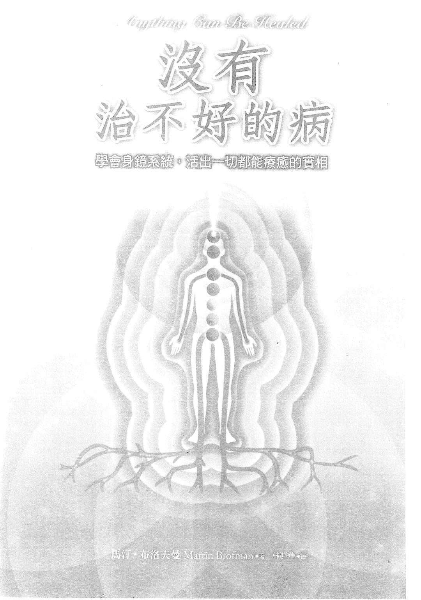
谨将本书献给我的圣灵——
是祂自愿展开这个任务，
不停引导我去经历祂那屡屡开展的新境，
让我享受丰硕的成果。
推荐序——疗愈是拿回内在力量的过程 杨绍民
没有治不好的病，好美！因为，疾病与症状是帮助我们更深地认识自已的线索，而疗愈是找回生命的主轴，拿回内在力量的过程！
有一位越南新娘嫁到台湾，因为人生地不熟、因为生活的变动，因为许多因素，她得了忧郁症。吃不下、睡不着，大家都告诉她，她要赶快看医师吃药，才不会愈来愈严重！透过身体疗愈的深层呼吸与触疗，她的心慢慢地沉静下来，找到遗忘已久的宁静；透过情绪疗愈的心灵彩绘，她释放了从童年时期就长期压抑的孤单；透过心智疗愈的意识清理（俗称回溯），她回忆起曾有的愿望：希望能够了解孤单与无依的人，并帮助他们。忧郁，让她更懂人的心；疗愈，让她学会如何传递爱！她进口了家乡的咖啡，并经营一家疗愈咖啡店，透过咖啡，她重新与人连结，透过分享，她成为传递爱的种子！
五年前，四十岁的李先生血压莫名其妙愈来愈低，心跳愈来愈慢。遍访名医也找不出病因，心脏科医师准备要帮他装节律器。透过疗愈，他看到自己在生活中的忍气吞声，让生命能量一点一滴流失！因为对多年好友的不舍，在潜意识他竟然已经放弃活下去的勇气！在心灵光舞的过程中，透过肢体的动作，他流动出对这份友谊的不舍，但对于彼此目前生命理念的不同也决定放下，好好把这份情，传递到更多人身上！透过疗愈，他学会把「爱」传给当下的自己与身边的人事物。「爱」，带来很大的疗愈！不只是心跳、血压，他的喜悦与幽默，随着疗愈课程的深度，也像花朵般地绽放出来。他的太太说：我好像重新捡回一个身心灵都健康的老公！
从神经心理免疫学来说，当意识对生活某部分感到有压力，压力在身体的层面上的紧张，的确会储存在身体的某些部位。包括大脑的边缘系统与海马回、身体的自律神经系统与肌肉筋膜系统、甚至是相关的内脏器官（注 1）。透过能量疗愈过程，既释放身体里的紧张，也在释放意识里的紧张，让身体的自愈力有启动的契机。放松、呼吸、观想、「正向」思考、专注、转念，可以启动身体的神经免疫系统，引动新陈代谢系统、血液循环系统的改变。彻底洞察生命事件的核心课题，全心全力地付诸行动，身心灵会回归它最自然平衡与健全的状态！
注 1
参考文献：A new gastric juice peptide, BPC. An overview of the stomach-stress-organoprotection hypothesis and beneficial effects of BPC Journal of Physiology-Paris Volume 87, Issue 5, 1993, Pages 313-327
作者马汀·布洛夫曼博士不仅治好了自己的癌症，他也把疗愈的重要元素、观念、与多年的经验在本书跟大家分享。对于所有从事疗愈工作，以及对能量疗愈有兴趣的人来说，这本书非常值得参考品尝。好好体会，期待这本书为您开启生命中的另一扇窗，照见生命不同的面向与更多的可能性！祝福大家！
杨绍民
・现任光流联合诊所院长／前杨绍民能量身心医学诊所院长。
・高雄长庚医院精神科主治医师，卫生署澎湖医院身心科主治医师，中华民国传爱发展协会顾问医师，中华民国能量医学学会专科医师。
・受邀台湾百大企业友达光电／奇美电子／和乔科技／台中市政府等专题讲座讲师。
序
在一九七五年之前，我根本不相信任何一个在本书里提到的观念。全是因为医生诊断我得了癌症末期，脊髓里长了一颗肿瘤，只剩一两个月的寿命，我才会为了痊愈而发奋研究意识与身体之间的关系。
我决心用我在西瓦心灵术（Silva Method）（注 1）的一套课程里，所学到的放松、观想、正面思考、静心等技巧还有肯定自我的语言，来治疗自己。这段期间，痊愈的需要也驱使我去探讨东方宗教与玄学、以及西方心理学，我四方搜寻任何能够救我一命的资料。
注 1
荷西·西瓦（Jose Silva）为创始人，这是一套包含催眠、NLP 技巧、观想、冥想和自我暗示等范畴的 一套技术。这套技术借由放松身心、减缓脑波频率、促进右脑的活动，可以产生正面的效果。
在自己身上努力了两个月之后，我得到了报偿，医生对我说他们之前一定是弄错了，不再有肿瘤，所有症状也不复见。
等完全康复以后，我开始教导别人我曾用过的自我疗愈法，并分享在这过程中得到的见解。有些来找我学习的人拜托我治疗他们。起初我不甚愿意，因为我觉得，每个人都有疗愈自己的力量和能力。可是有些人无法接受我的想法，或是不知道要如何靠自己来创造出能量疗愈的过程所需的清明度和客观度。他们比较相信我才有能力疗愈他们，不相信他们有能力自我疗愈。不管我多坚持他们自己就可以办到，他们还是坚信应该由我来帮他们做。假若我拒绝，他们就会在未痊愈的状态下离去，但这也会让我难过。
我心想，如果这剧情的剧本由我来写的话，我可以写得更好，我看到的结局是他们离开的时候都痊愈了，于是我同意在他们治疗的过程中，担任治疗师的角色。
我接触的人愈多，就愈看到他们身体里发生的事与他们意识里发生的事，是有关联的。我逐渐发展出一套模型，几乎涵盖了所有我探索过的观念，并反映出我自己的经验，以及所参与过的疗愈带给我的见闻。这个模型发展成一套能量疗愈的体系，我称之为「身镜系统」（Body Mirror System），来呈现「身体是人生的一面镜子」的观念。
当人需要疗愈的时候，身体中那些有状况的部分，反映的是人生有状况的部分，也就是人生中那些让你的意识感到有压力和紧张的地方。当意识对生活的某部分感觉压力，这压力会在身体的层面上以紧张的形式，储存在身体的某个部位里。因此，可以把身体视为意识的地图。能量疗愈的过程需要的不只是释放身体里的紧张，也要释放意识里的紧张，重回自然的平衡状态。
打从「能量疗愈」这个概念存在之始，就经常受到大家的误解、怀疑，以及畏惧。社会上一直都视它是一种超自然、神秘的过程，只有萨满、巫医、有特殊天赋、可和上帝直接交流的人才能做到，或任何通常不会和凡人扯上关系的事，但事实上，我们全都有这些天赋，我们全都可以是能量治疗师。
本书的目的正是想传达能量疗愈乃是一门意识的科学技术，也就是一套手法，只要你想学习，都可以运用。这是一本关于能量疗愈过程的技术手册，把从东方传统中汲取的观念，结合西方的心理学。熟悉玄学的读者会发现，本书澄清了许多概念，而没有这方面背景的读者也会发现，本书将这类观念与技巧表达得十分简明，容易读懂也容易运用。
身镜系统是一套关于疗愈和自我认识的体系，本书涵盖建构了此体系的观念、原则及哲理。愿它能帮助你认识自己，知道如何疗愈自己与他人。
没有什么疾病会让什么人或什么部位无法痊愈的。
只要一个人可以做到，人人都可以做到。
————在这个世界上，一切都可以疗愈！————
前言
一切都始于你的意识。
你人生中发生的所有事情、身体里发生的所有，都始于某个发生在你意识里的东西。
当你面临生活中的状况，你会选择要如何回应。你会做决定。你决定你要有什么感觉、你要如何思考、你要怎么做。或是决定你不要决定。这，也是一种决定。
这种过程不是到了某个年龄之后才开始的。它一直都是如此，恒是如此。它现在就是这般。在你降生到这个人类的身体之前，身为意识、灵魂的你就是这样了，你的婴儿期、童年、青春期也是如此，你成年以后还会继续如此，就算你离开了你的人类生物载体之后，还是一样。
当你用最好的方法回应你面临的情况，你就能继续活在平衡的状态里，而这样的过程也依旧还会发生。当你回应的方法导致紧张或身体产生症状，就表示有哪里不顺了，对你来说行不通了。有哪里失衡了。
意识的自然状态是平衡。痊愈就是回归你原本自然的平衡与健全状态。在我们的社会里，有人教你去相信疾病或受伤的来源是外在的。虽然在物质层面上来说确实是这样，但只有在你的意识状态允许它发生的时候才会如此。
如果你继续一心寻求外在的治疗、药物，你往往就看不见生活到底出了哪些状况以及意识里的紧绷——这些状况和紧绷不只和身体症状有关，甚至还创造出了这些症状。然后，你会认为自己是环境下的受害者。你也很可能不会去清除意识中那些妨碍你追求健康、快乐的紧张。
如果你选择要着手处理这些症状，而方法与现代传统的取向不同，那你可以从了解这个观念开始：一切皆始于你自身的意识。如此一来，你也会开始为你身体里、你人生中的每一件事，还有为你选择要输入什么意识、允许自己的意识接受什么，负起责任。
接着，你就能够提醒自己：实相是你创造出来的。你有源源不绝的天生才能，你一直都与生俱来就拥有内在的能量疗愈工具可以加以运用。你也会记得，可以选择用不同的方法回应周遭的环境——一个对你比较有效益的方法。
这本书的用意是要让你忆起意识与身体之间的连结。它同时也是一本操作手册，让你了解你来到这个世上时，就已具备的才能以及你有哪些可以一起运用的工具，它们一直都随时可为你所用，也都可为我们所有人所用。
————我们都是治疗师；在内心深处我们知道，一切都可以疗愈。————
第一部 概论
第 1 章 能量治疗师与能量疗愈
我们把「疗愈」（healing）定义为：「回归平衡（和谐）与健全的感受」。疗愈别人的人，是在帮助对方重拾健全的状态；而疗愈自己或从事自我疗愈的人，则是让自己回复到健全的状态。
「疗愈」是用来形容「意欲让接受者（接受治疗的对象）回归健全的过程」。当这个过程成功，我们也说最后的结果是「疗愈了」。我们会说，某人接受了疗愈，也得到了疗愈。
疗愈成功的程度可能是局部，也可能是全面。若是局部，表示这个人有了改善。我们会说他感受到了疗愈，（到目前为止）有了局部成效。若效果是全面性的，我们就会说这个人已经痊愈了。
「治疗师」（healer）是参与疗愈过程的人，他有想要帮助接受对象回归健全感受的意图。这个词也用来形容过去担任这个角色时，颇有成效的人。既然只有治疗师能够疗愈，那么曾经成功带来疗愈的人必然就是个治疗师。
因此，我们称为治疗师的人，都是「拥有」让疗愈过程发挥效果的「能力」。我相信这个能力其实是人人与生俱来的，只要学会运用你已经拥有的工具就可行。人人都可以是治疗师，无论这能力是隐而未显还是已经颇有成就。
和用药一样，能量疗愈是否一定会有成果是无法挂保证的。然而，当能量疗愈的过程很成功，是因为有好几个「因」相互作用得很好，而且这些「因」都是可以量化的，像是治疗师运用技能的熟巧度，需要疗愈的人敞开心胸接受的程度，随之而来的改变程度，以及治疗师、案主（被疗愈的对象）之间互动的热络度。
显然，疗愈可以有很多层面，包括身体、心理、情绪、灵性，而能量治疗师也有很多不同的种类。有些治疗师用的是来自上帝的能量，他们觉得自己只不过是管道，让上帝完成祂的工作而已。而有些人进行能量疗愈的时候，会有比较多的个人投入感，他们觉得在进行疗愈的是自己，甚至并不信仰上帝。不管是哪一种，接受对象都会被疗愈。
如果有减轻病痛的方法，如果有不同信仰、有适当手法与技能的人出于人道关怀而自愿提供这些方法，任谁都没有理由继续受苦。
某些治疗师在提供疗愈时的做法是维持载体（也就是身体）的纯净度，因为疗愈的能量必须通过身体；有些人则认为能带来疗愈的爱就是纯净的，不管个人需要什么样的食物、或这个载具有什么样的情况，都不影响这一点。有些治疗师吃肉，有些吃素。有些萨满技巧会用致幻药物，但有的治疗师会避免。有的治疗师用药物，例如草药、各种不同的药剂，但有的只用意识的力量来治疗。有些治疗师觉得治疗时要在接受对象身边比较好，但有些做远距疗愈的效果最好。他们的共通之处，就是他们有能力帮助别的生命存有重回健全的状态。他们都在人群中担负起帮助人的角色，服务了周围的人群。
综合以上种种，我们知道显然你完全不需要改变自己，才能加入治疗师的行列。首要的条件就是做你自己，做你觉得最顺的事，就算你的做法和身边其他人都不一样也很好。你的个人习惯、饮食习惯、性习惯或社交技巧怎么样都无所谓。对一般大众而言，你的价值就是你有疗愈他人的才能。
当你成功疗愈了（他人或自己），你就是个治疗师，这是永远也无法从你身上夺走的东西，无论其他人的理解为何，都没有人可以说它无效。
当你成为一名能量治疗师，你就是治疗师团队的一员，他们遍及人群里的各个角落，安身在各种可以让他们发挥能力的环境中。凡社会里有需要疗愈的地方就有他们，而且目前为止，没有哪一个社会的哪个角落是不需要他们的。就连治疗师自己有的时候也需要疗愈。
有些治疗师在科学界里工作，有些在灵性圈里，有的在军队中，也有在政治圈里的。在受人尊敬、大家可以接受的社会阶层里可以找到治疗师，在次文化、反主流文化里亦然。
能有效地运用一套手法来疗愈别人，并不等于他天生就比别人更有力量、更优秀，一如一个人识字并不等于他天生就比其他人更有力量、更优秀一样。而事实上，这两种宝贵的技能都是人人皆可学会，并且还是小孩就学得会的。这种连六岁小孩也学得来的能力，我们对它又有什么好得意的呢？
诚然，或许有些治疗师会利用身边的人的迷信和无知，来满足一己之私。不过这种情况已经愈来愈少了，因为已经有愈来愈多人发现要获得疗愈手法的能力并且上手是有多么的容易，本书所要呈现的手法就很简单易懂。
重点不是治疗过程是否有效，而是要如何令它有效。这本书就是想要解释能量疗愈要如何发挥效用。
人人都可以运用这些手法。
人人都可以获得痊愈。
————在这个世界上，一切都可以疗愈！————
第 2 章 不同的实相
首先，我们必须放下「万物运行的方法只有一种，实相只有一个」的这个观念。我们会在这一章探索「有不同实相」的概念，也就是在不同的实相里，事物以不同的方式在发生。
我们每个人都是一份意识，驻在身体里。每个人都在决定要如何思考、要有什么感受。我们选择了自己的认知，而我们的认知创造出我们的实相。
我们会用主观的方法来诠释所有从周遭世界来到我们意识里的资讯，这主观的方法就是我们的认知。
那好比每个人身上都有一个泡泡一样。有些资讯穿过这个泡泡而来，被表层过滤后，呈交到意识以获得注意。剩下的资讯就没有留下有意识的印象，而是穿过泡泡，储存在意识较深层的地方。我们的观念、信念、欲望还有感受，都在为那些过滤我们观感的泡泡上色，所以当不同泡泡的人看着一样的东西，他们可能会对自己在看的东西有截然不同的认知。
例如，一个生活在红色泡泡里的人，会看到世界是红色的，但一个生活在蓝色泡泡里的人会觉得世界是蓝色的，我们可以想象当这两个人在讨论世界的颜色时，会有什么样的一番对话。从某个角度来看，他们说的话都都对，他们所有的认知也都支持他们的论述没错。不过从另一个角度来看，或许这两种认知都没有呈现出客观的实相。也许世界既非红也非蓝。我们唯一能够确定的事实，就是一个人看到它是红的，一个人看到它是蓝的，因此，我们可以感觉到每一个泡泡、每一个过滤器各有其特性。我们就是以此为基础，在沟通和交流彼此的想法。
纵使我们看到的都是外在世界里的同一件事，但每个人的泡泡会各自渲染自己对这些事件的诠释。检视自我的诠释会让我们认识到自己有什么样的信念和认知，因为给我们泡泡「染色」的，正是这些信念和认知。一个相信竞争与冲突无处不在的人，看世界只会看到这一点，但也可能有一些人是只明确地看到世界充满有爱心、表现爱心的人，这样的人有时候还会对「认为世上没有爱」的观点产生反弹。
为此我们可以明显看到，认知还会预先影响我们去做出某些举动，不只落入我们觉得看似当然的剧情，事实上会创造出这个剧情，让它继续上演。例如，一个对情人缺乏安全感的男人，他的不安全感可能会真的让他的情人离他而去，然后就证明了他的认知有理、他是对的，但同时，也是他自己从一开始就创造出这个剧情。
有一个故事，一个男人的车爆胎了，不远处有一个偏远的农村，里头有间农舍。男人心想：「那儿有一间农舍。他们一定有可以借我修轮胎的工具。」
他一边走向农舍，心想：「如果能用他们的工具，就帮了我大忙啦！我可以大方点，付给主人五百块，答谢他借我工具。我想他会很高兴的。」
他又继续走，心想：「这儿可真是偏远哪！前不着村、后不着店的，如果主人要跟我收一千元才肯借我，我也得付。」
再往前走，他忿忿不平地想：「这什么鸟不生蛋的地方！如果主人要跟我收三千才借我的话，我只能无奈地付了！」
等他到了农舍敲门的时候，真是怒火中烧。里头的农夫一开门，他就对着他大吼：「说吧！你到底要我付多少钱才肯让我借用你的工具？你这个王八蛋！」
我们可以看到故事里的这个男人已经预先决定了他要怎么做，他不只落入自己认为理所当然的剧情，事实上，更是他创造出这个剧情的。
当我们讲到「认知创造实相」，讲的不只是认知的过滤器，还有事物发生的过程。这表示就算是看似最理所当然的物质因果关系，只要它在不同的实相与模型里，就不会一样。
比方说，想减肥的人可能会相信：若想减肥，就必须警觉他们从饮食中摄取多少卡路里，并与日常活动会消耗的卡路里相比较。如果摄取多过消耗，就会变胖；如果消耗多过摄取，则会变瘦。那么，一种变瘦的方法就是，要吃某种食物本身的卡路里比消化它所需的卡路里还低的食物。葡萄柚就是一种。于是在这个实相认知里，如果我们吃葡萄柚，就能预期自己会变瘦。
在另外一个实相是，卡路里和体重的关系不大，因为卡路里马上就被消耗掉了。我们要警觉的反而是碳水化合物，因为它们会以脂肪的形式储存在体内。若想要变瘦，就必须减少碳水化合物的摄取。于是依此来说，葡萄柚和其他水果一样都含有碳水化合物，如果吃很多葡萄柚，我们会变胖！
以上两个实相都是真的，不管你相信哪一个，都很容易就可以证明两者都对。这两者并不互相排斥，不必一个为错才表示另一个为对。两者都可以是对的，但在不同的实相认知里，事情会分别以不同方式发生。
所以你吃葡萄柚会变得怎样呢？会变胖？还是变瘦？
首先，这取决于当你吃葡萄柚的时候，你相信你会变得如何。若你相信你会变胖，你就会变胖。若你相信你会变瘦，你就会变瘦。如果你真的不知道会变得怎么样，你就得吃了葡萄柚以后才会知道。然后你就会认同其中一个实相，你知道它对你而言是真的。当下，你也知道其他人可能会觉得其他的实相才是真的。
你相信什么是真的，它就是真的！对你而言！
你的信念源自何处？
当你面对别人的信念，你可以自由决定你要接受还是拒绝。如果你选择接受别人的信念对你也是真的，那就是把这些信念纳为己有。你可以决定：既然有专家都这么说了，那么吃是葡萄柚肯定会让你变瘦——或变胖。端看你自己的决定。
还有一种在自我意识里创造出信念的方法，就是借由诠释你自身的经验，来决定你要相信什么。一开始的时候，你可能不知道对你而言什么是真的，也不知道要相信什么。你从亲身体验开始：在不知道会变得怎么样的情况下吃葡萄柚。
然后你检视这次亲身体验的效果。你用某种方法去诠释你所经验到的，用某种语言对自己形容这次的经验。当你这么做，你就创造出了某个信念。例如，你判定：「吃葡萄柚会让我变瘦，因为我吃很多葡萄柚之后，我变瘦了。」
当你形容你的经验，你所使用的语言就会创造出你的信念，因此也就创造出你的事实。
等你的经验定义你的信念之后，你的信念就会确立并创造你的经验，于是你会发现，不管你相信什么是真的，它就是真的。你会吸引、会更容易注意到那些肯定你的事实为真的经验。
因此，有其他信念的人可能会遇到其他的真实。而且，当你改变你的信念，你就可以改变在你的模型、你的实相里，事物运作的方式。所以，如果有某件事对你一直都是个问题，那么当你去探索不同的信念，你将发现，换条路走会让事情运作变得较顺，这也正是让事情如你所愿的方法。你可以找到一个达成心愿的方法。
在物理学的实相里，医生可能会告知一个人他得了重症，无药可医。在这个实相里，如果没有任何改变，这个人当然会死。如果他选择探索这种情况有哪些其他的出路，他就有活下去的机会，过着健康、和谐的生活。
疗愈发生的时候，可能看起来好像中断或打破了化学、生物学、物理学的某些物理定律。不过，这些定律其实并没有绝对的支配力，它们只是企图以过去的经验还有实验数据作为基础，来预测未来的结果表现。等到发生了一些事，不得不考虑其他因素，并修订这些定律，它们也就不再被视为定律。
举个例子，若你把一样东西抛到空中，它会掉下来。不管你重复这个过程几次，结果都一样。你可以决定定律就是：「往上丢的东西必然会往下掉。」直到你用的力道强到让你可以避开地心引力为止，接着你就必须考量到其他因素而改变这些定律。
当我们检视能量疗愈的模型，即使它看起来好像打破了生物学、化学、物理学里的「定律」，但其实并没有真的打破了什么定律，只不过是遵循了其他定律而已，因为在不同的实相里，事情会以不同的方式发生。
然后，能量疗愈就成了传统医学实相之外的其他泡泡。每一个泡泡都可以被视为是世界上唯一存在的实相，但如果放下只有单一实相的想法，我们就能考虑到还有其他不同的实相存在，它可以单独存在，也可以和其他的实相相结合。
有些人选择结合不同的实相，从各个实相当中选择对自己最有效的元素。听到传统科学说自己已经没救了的人，可能会强迫自己完全接受其他的模型。
最重要的是，做对你最有用的，别排斥可能会对你有益的观念或方法。
能量疗愈的身镜系统就是其中一种的实相和模型，它也代表一种泡泡，本书要呈现的就是存在于这个泡泡里的真实、发展变化，还有因果关系。
它并不主张其他实相无效，只是提供另一种选择。
————在这个实相里，我们理解到一切都可以疗愈。————
第 3 章 人类的能量系统
你是一个意识。
意识可以定义为：「存有的体验」（the experience of being）。
因此，你是一个存有——正在体验的存有。你一直都存在（being），也永远会存在。当你活在人的形体之中，你称自己为人性的存有（human being（注 1））。
注 1
在英文中，这个词也是固定用法，一般可直接指称「人」。
意识也可以形容成一种能量的形式，有时称为「生命能量」。当意识或生命能量离开身体，身体就死亡了。我们所谓的身体并不是真正的你，它只是承载意识的载具，意识才是你。此外，身体也是你意识／能量的延伸，是你意识／能量里密度较大的部分，因此它也能反映出本是意识的你处于何种状态。
你和你的身体（如果也要包含各灵妙体〔subtle bodies〕的话，「体」就会是复数的）一起组成了一个能量系统，也就是由不同的能量密度、不同的频率，一起构成一个充满变化的关系。
虽然这类概念已经流转传播了好几千年，但直到最近才出现了科学的证据。现在，透过克里安（Kirlian）照相术已经有可能，而且也真的成功地看到了。这套照相术的系统在拍摄某样与底片接触的东西时，会用电流穿过摄影的底片。他们先是拍了树叶的照片，照片冲洗出来以后，树叶本身的影像被一圈看似从它散发出来的能量场所包围。
切掉一部分树叶之后，用克里安照相术再照一次照片，可以看到树叶本身的影像是少了一角的，但周围的能量场依然完整，一部分也没少。这表示，树叶的能量场并非只是从树叶本身散发出来的东西而已，它是独立存在的。
用克里安照相术拍摄人手时，出现了一种能量的图案。已经有人用克里安照相卫拍摄能量治疗师的双手，证明了他们可以影响能量的形态，当他们有意识地透过双手传送能量，克里安相片上的形态改变了。
如此说来，克里安相片并不是反映出手的肉体结构，而是手的主人的意识还有能量场。当这个人的意识有了改变，反映在克里安照片里，就会看到这个人的能量场也有了改变。
运用克里安照相术的人将显现出来的能量场加以量化后，能找出一个人能量场的「脆弱处」，而这与身体里特定的脆弱处或症状互有关联。事实上，甚至有证据显示，在身体层面出现脆弱处之前，就已经能够先在能量层面上侦测出来。
意识里的改变会带来能量场的改变。在身体层面出现改变之前，能量场就已经会先显现出改变。因此，显现的过程会有一个方向：从意识，到能量场，再到身体。
意识→能量场→身体
当我们这么来看待这个过程，就会清楚知道，不是身体创造出能量场，而是能量场（也就是意识的效应）创造了身体。
我们所认为的身体，是一个过程的最后结果，而这个过程始于意识。意识、能量场、身体全都处于互有关联的平衡状态中。当一个决定、情绪反弹导致意识出现了一个充分的转变，能量场和身体会想要与它维持平衡，于是身体便会用紧张的形式产生症状，反映意识里的紧张。
在疗愈进行中，当能量场得到修复、重归平衡，意识和身体就会进入新的平衡状态，产生新的能量形态，紧张与相关的症状就能够解除了。
要想知道这是怎么发生的，就得更进一步看看意识的细部、能量系统，还有身体。
有一天，我受邀去医院找一位从电梯井里摔下去的伤患。她的身体受到撞击后，断成好几截，损伤到脊髓。她瘫痪了，觉得胸腔以下没有知觉，所以当我触摸她身体的几个部位时，她都没有反应。
当我的手放在她腿的侧边移动时，虽然我并没有碰触她的腿，但她描述感觉仿佛有一道波动，沿着她的腿往下移。既然我没有碰到她，这就不可能是身体上的知觉。而当我真正摸到她的时候，她因为脊髓受损的原故反而没有感觉。
要沿用前述的概念解释她怎么会有这种感觉，我们可以想象她是一个能量体，这能量体占据着身体，接着再想象能量体和身体分开了，所以她可以体验并感受到能量体，但感觉不到身体。
我们所经验到的一切，都是透过能量体在经验的。当能量体和身体占据同一处空间，它们会在身体的层面上构成一个并行的过程，例如：神经受到刺激、电化反应、在神经间移动的电脉冲等。
物质科学研究的是身体层面上的过程，但不见得就是意识层面所经验到的。当一个人经验到他的意识去了别的地方，如在梦境里或灵魂旅行时的那样，他会觉得那个地方仿佛是用身体的感官经验到的，但他身体感官的器官并没有参与。不过，这次经验的记忆还是可能会被储存在身体里。
物质科学都以一个概念为基础：病症的肇因都是外在的（例如细菌导致疾病，意外导致受伤等）。然而根据形上学的原则，只有在意识里也有适合让这些状况发生的状态时，它们才会发生。从形上学的角度来说，我们认为所有发生在物质层面上的一切都是「果」，而「因」存在于意识之中。
物质的形态和形上的形态并不相互冲突，反而说明了当意识的状态创造出适当的环境时，在身体的层面上也会发生一个并行的过程。
意识不只驻于脑部，而是全身，所以透过意识，你连结到全身的每一个部分。事实上，你的意识还会延伸到身体之外，通常往四面八方延伸个一至两公尺远（也有人说是无限还远）。因此，你意识的这个部分，你的能量场，其实也就是我们所谓的「气场」（aura）。
气场、能量场外围的部分颇为精微，愈接近所谓的身体，能量密度就愈浓稠。我们可以把气场视为是由几种不同密度的能量所构成，与从不同能量体（身体、情绪体、心智体、星灵〔astral〕体、乙太〔etheric〕体、菩提〔buddhic〕体、因果〔casual〕体）散发出的不同能量层次相应，彼此互相贯穿，以不同的振动频率存在于同一个空间。本书于第十二章会更详细讨论这些能量体（见图 3-1）。
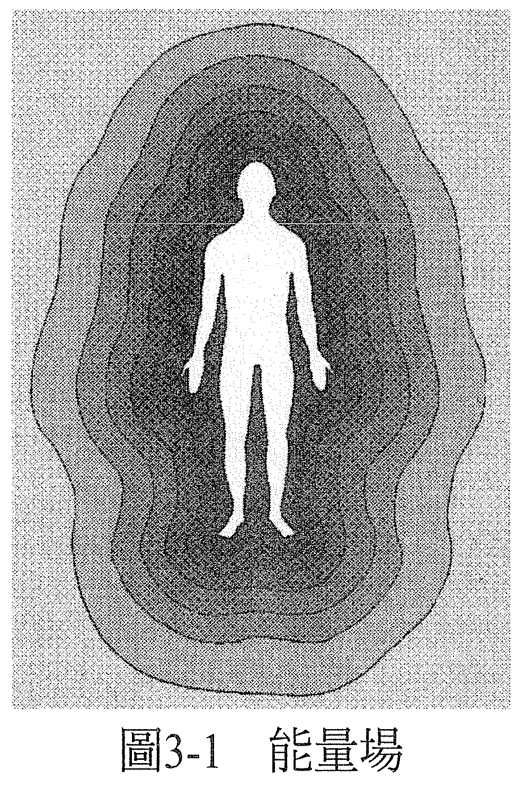
既然愈接近所谓的身体，能量的密度就愈大，所以我们又可以把身体视作一个能量密度较大的形式。
我们平常对身体的认识，会让我们每个人把自我视为一个生物结构体，但如果仔细看一下物质的结构基材，就会发现，自我其实也是一种能量的结构体。
最小的生物单元是细胞，由分子所构成，而分子是由原子（或离子）构成，原子（或离子）又是由粒子（中子、质子、电子）构成，接着这些粒子又由更小的粒子（夸克、微中子、胶子等）构成，更小的粒子又由微小的黑洞与白洞构成，最后，每个洞都有一个正极或负极。
这些黑洞与白洞的形态，这些能量，组成了我们物质宇宙中所谓的粒子。其形态构成的形态，又组成了较大的粒子，接着它们的形态又组成了原子。原子的形态组成分子，分子的形态组成细胞。细胞的形态组成组织，组织的形态组成器官。
器官的形态组成了有机体。
因此我们可以说，整个有机体都只不过是由某种结构里微小的黑洞与白洞所构成的，只是能量而已。
我们在太空里看到地球绕太阳转，就像电子绕着中子转一样。不妨把太阳系视为原子，而它以同样的空间比例，存在于我们称为银河系的更大分子中。我们可以把其他的银河系、其他的分子，视为更大结构体的一部分。以此类推。
我们在太空里也可以看到黑洞与白洞（类星体）。无论是「往外看」还是「往内看」，我们都看到同样的东西。虽然从某个观点来看，我们都同意把我们看到的叫做「物质」，但我们也可以单纯地视它为能量，而且这么做有个好处，当我们把它视为能量，就不受物质「定律」所局限了。既然我们用来形容自己经验的语言会创造出我们的实相，那我们是可以 创造出看起来能违抗物质「定律」的疗愈和效果的，因为能量作用的方式与物质的结构体不一样，它遵循的是不同的「定律」。
当我们把物质的结构体单纯视为一种能量的形式，只不过是比围绕在它周围的能量场更稠密的一种能量形式，我们就能把自己看成是一个由不同密度的能量所构成的能量系统。
能量在健康、均衡的个体里，会流动得很顺畅。意识能够顺利地回应所遇到的每一个情况。一旦个体因为某些决定或情绪反弹，而阻碍了能量的流动，如果这个障碍的密度够大，就会在身体层面导致病症。
意识→能量场→身体
决定→障碍→病症
因此我们可以说，所有的病症都只是反映出卡住的能量。当我们做出不同的决定或是接受疗愈，而重新平衡能量场，就能疏通能量，症状就会解除了。
当我们去看意识、能量场还有身体的形态，就会发现身体是一个过程的结果，起始点是我们的意识，然后这过程会在能量场里穿行。如果我们按照一种自己相信为可能的方法，把阻碍能量流的决定加以扭转，能量场就会重归平衡，症状就能解除。
意识→能量场→身体
改变决定→疏通→症状解除
疗愈能量场的时候，其作用会朝两个方向发挥：意识及身体，于是我们会经验到意识有了改变（意识层面的压力纾解了），身体层面的紧张与症状也会纾解。小黑洞和小白洞重新排列。这个生物结构体会产生重组，症状就解除了。过程的速度不以快、慢来论，它也一样是由你相信会多快或多慢所决定。
意识→能量场→身体
紧张纾解→疗愈（疏通）→症状纾解
症状之所以存在的目的，只是想向我们传达讯号：「出现了一个情况」。当这个情况不复存在于意识里，症状也就没有理由存在了。
身体某部位的紧张，反映的是意识有某个部分对于你生活的某件事感到紧张。身体有状况的部位，反映的是生活有状况的地方。当与生活此一部分有关的紧张可以从意识的这个相关部分得到纾解，它就能够从你身体的这个部位中解除。你身体、意识、生活的这个部分，就都能够重回自然的和谐状态，你会回到最佳状态。
所有的疾病、损伤，都是能量受阻后的结果。既然我们能用思维来引导意识或能量，那我们也有能力去疏通自己或别人身上受阻的能量。如此一来，最后就能重回完整的状态。疗愈就发生了。
届时，显而易见的一点是：
————在这个世界上，一切都可以疗愈！————
第 4 章 身体的语言
有一种意识状态是你的每一层面都有完美的平衡，经验着完美的健康，而你内在有个地方正连结着这种状态。事实上，那就是你生命的自然状态。经验到这种意识状态的你，会用最棒的方式来回应生活中的状况，你会连结到内心的声音——即你的直觉，你会听它的话。你做你自己。因此，你很健康。
直觉会用一种很简单的语言来说话：感觉好，或感觉不好。大家似乎都同意这点：当你倾听你的直觉，它总是会引领你走向成功。因此，你会学着每次都去做心里感觉好的，不去做心里感觉不好的。
如果你也接受生命是有意义的这个说法，你必然认为这个意义一定是你做起来感觉对的事情。不然，你就不会有去做的动力。
你的存在是为了要快乐。所以，你必须做让你快乐的事，不做让你不快乐的事。若这是你存有最深处的定律，那么你整个存在的每一处都必然如此。因此，你学到你必须去做你真心想做的事，做起来感觉很棒的事，不要做你并非真心想做的、不情愿做的事。你会学到要听从你的心。
当你不听从内在之声，你就会感到不快乐和紧张。如果你继续朝感觉不对的方向前进，你的情绪上就会有愈来愈多的抗拒，事情有可能不会按照你想要的那样发生，也会让你愈来愈不情愿。当抗拒强到一个程度，你可能会对自己说：「早知道心里的声音告诉我要换一种做法的时候，我就应该听它的。」如此说来，你一定曾听见那个内在之声，否则你怎么会对自己说：「早知道我就该听它了」呢？
一旦你做了你知道该做的事，紧张就会纾解，你会感觉好很多，重回和自己融洽、与环境和谐的状态。但如果你继续去做让自己不舒服的事，你就会经验到愈来愈多的紧张、抗拒，最后紧张就会抵达身体的层面，你会发展出身体的症状，或是把会造成身体病症的情况吸引过来。然后，就可能出现疾病、「意外」、跌倒、神经伤害等，导致一些症状发生。
就我们的讨论而言，我们要看的重点是症状及其效应。从形上的观点来看，我们会说最终的结果就是原本真正的意图。这次的经验会发生，乃是为了要得着那最终的结果。
没有所谓的意外，也没有所谓的巧合。如果一切都始于你的意识，那么所有发生在物质层面上的一切，都是你意识里曾经发生的一切所带来的结果。如果事件造成了病症，那么这件事的发生是为了要创造出这个病症，因为在直觉或感受的层面上，你曾有过来自较高自我的讯息，可你没有听，但是对你而言，接受这个讯息是很重要的。
病症会用你的语言来对你说话，告诉你你在对自己做什么。这个语言完全显示出「你创造自己的实相」的概念。当你用这种思考方式来形容你的症状，就能明显看到它在形上的意义了。
因此，与其说「看不见」，不如说「我一直阻止自己去看见某个东西」或「我一直在逃避去看见某个东西」。不要说「我听不见」，要说「我不想听见」或「我不想听见某件事」。以此类推。
这样的话，身体就是在说，到目前为止，你一直都在用这个你选择的方式、你意识采取的做法来对待自己。言下之意就是你或许会选择继续用同样的方式活着，但你也可以换个做法。重点不在对、错，而是单纯的因和果。你无须对这个过程感到内疚，只需要承认自己的责任。有一种活着的方式会创造出症状，但也还有其他种活着的方式能够缓解症状。决定要怎么活着的，是你。
当你了解身体要给你的讯息，在意识、活着的方式里做出必要的改变，然后不再去做那些失衡的、令你感觉不对的事，你就会在所有的层面上回归和谐状态了。
症状存在的目的原本只是为了要给你一个讯号，但现在它没有存在的理由了，所以它会按照你敏锐的程度还有信念系统来解除，接着，就看你愿意允许自己相信什么是可能的。还这一切都必须放在当症状发展出来的时候，你人生发生了什么事的脉络之下来检视，因为创造出这个症状的，乃是你对这些情况的反应。
在我自己的经验里，我脖子处的脊椎曾得过脊髓癌，而且已经到了末期。症状是瘫痪、无法走路、疼痛不已。癌症代表的是被压抑、没有表达的东西。当我们压抑着什么而没有表现出来，它就会在内在一直不断变大，癌症就完美地象征了这种状态。身体受到影响的部分会指出是什么受到压抑、没被表达。
对我而言，我的癌症出现在能量系统里代表沟通和表达的地方。我一直都在压抑自己，不说出真心话。我的婚姻不快乐，我感到不能随心所欲地说话，不然就会演变成争执。
当我从「是我创造出我的病症」的角度来形容它们，我不说我瘫痪了，而是必须说「我一直都在瘫痪自己」。我一直试着按照我认为别人希望我怎么做的想法来生活，我没有做我自己。真正的我在心里，可是我并没有让这个真我表现出我真正要的样子。于是，我给自己许多痛苦。
我不说「我不能走路」，我得说「我阻止自己走路」。我一直让自己活在令我不快乐的经验里，还阻止自己走开，但我其实真的已经想走了。我因此而感受到的压力在影响我，在身体里累积到了具足毁灭性的程度。
我体会到若要解除这些症状，我就必须先解除创造出这些症状的生活方式。我不说「我快死了」，我得说「我一直都在扼杀自己」。我必须承认这一点，从「一切都始于一个意识里的决定」的观点来看，任何末期的疾病都必然始于一个想死的决定。死亡的原因有两种，人都因其中一种而死：要不是旅程已经末了，他们已然经验到或完成了他们想要的一生，这一生于是完结了，要不就是他们处于艰困的情况或遭遇，除了死亡，他们看不到其他出路。
我的情况正是后者。
我体悟到若要继续活下去，我就必须表现真我，和什么是真正的我沟通，离开让我觉得不快乐的情境，并思考除了这个让我自杀的生活方式外，还有什么选择。一般公认的医学模式认定我的情况是没救了，我也必须思考除了它以外，我还有什么选择。这些我全都做了，也改变了我的人生。
既然这种医学模式无法解决我的问题，我也就不再接受治疗，也没吃药。既然他们认为我若咳嗽或打喷嚏就可能随时会死，每一餐都可能是最后一餐，我便想吃什么就吃什么，我开心得不得了。我没有采用特殊饮食。当时我刚好很想吃也很爱吃的是汉堡、香肠、披萨还有可口可乐，于是我便吃了一堆。因此，那时我需要的是很多很多的阳性能量，还有各种程度不等的阴阳能量。
我改变的是我心态上的饮食，也就是我选择接受哪些想法到我的意识里。如果我有了某个想法，但事后感觉不好，我就知道是因为我选择了那个想法进而创造出压力。压力创造疾病。如果我想感觉舒服一点，我就知道我必须选择其他让我感觉较舒服的念头。
我为自己的情况负起责任。我对自己承认快乐是重要的，做让自己快乐的事是重要的。我也投入能让自己相信症状正在缓解所必须的内在修炼。最后，所谓无药可医的病况得到了扭转。我好了！
我花了两个月的时间密集地在自己身上下功夫，因为我相信要花两个月。当时我还不知道现在我知道的事。用身镜系统里的手法，同样的效果可以在两周、甚至是两小时之内达成。事实上，要从一个恶化的状态进行到好转的状态，只需要那么一刹那。这之后，你只需要坚信疗愈已经上路、正在发生，并且当好转的现象出现在身体层面上，你要留意到它们。
重点是，要了解到没有治不好的病。问题不是它会不会好，而是你知不知道怎么做。
此外，做就对了。
当你懂得身体的语言，你就愈能在愈早的阶段听见这些讯息，最后你会完全活得与内在存有、你的更高自我相合一致。到那个时候就可以不用再管疗愈了，因为你不再需要透过病症来收到讯息。你会愈来愈能依从你的中心来运行，倾听内在之声，做感觉对的事。
那时你就会更健康，而且快乐得多。
————在这个世界上，一切都可以疗愈————
第二部 身镜系统及其概念与手法
第 5 章 脉轮
脉轮的原文「chakra」是梵文，意为「轮子」或漩涡，指的是七个能量中心，你的意识、能量系统就由这些能量中心所构成。意识代表所有你能经验到的一切。你全部的感知、领会、思维过程……所有你能达到的生命状态，都发生在你所谓的意识里。
意识可以分为七类，分别与一个能量中心或脉轮有关。
你的意识是一个能量系统，由不同密度的能量构成流动或运动的状态。当能量流动得很顺畅，你会觉得很健全。当能量受阻，你会经验到紧张，紧张可能会以病症的方式显现。脉轮就像帮浦（pump，泵）或是活栓，调节流经你能量系统的能量。因此，你意识的能量流动状态也会受你脉轮的状态所决定。
脉轮的运作会反映出你回应生活状况时，选择做出的决定。当你决定如何思考、要有什么感觉，你要用哪一种认知的过滤器来经验周遭世界，你就在开、关这个活栓。当然，重点是要让所有的活栓都顺畅地运作，就像笛子上的活栓一样。当你的意识对人生的某件事还残留紧张，这个紧张就会影响能量系统的活栓流畅运作，活栓可能会就此「卡住」，无法灵活开关。
脉轮和气场一样，都是一种意识的面向。脉轮的密度比气场稠，不过没有像身体那么密集。它们有如扎实的能量球，与身体相互穿透，就像磁场与身体可以相互穿透一样（见图 5-1)。
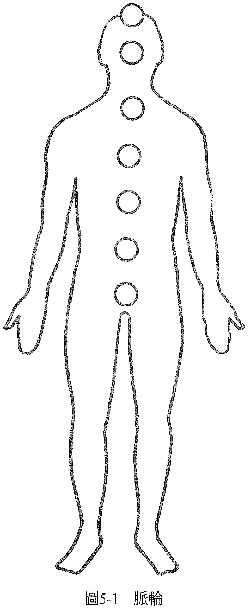
每一个脉轮都和一种内分泌腺有关，也和某一群神经，也就是神经丛（plexus）有关。当你经验到意识的某个部分很紧张，你会在与这部分有关的脉轮里经验到这个紧张。然后，紧张就会传输到和这个脉轮有关的内分泌腺，这个内分泌腺会分泌荷尔蒙，改变身体的化学作用。因此，意识的改变会造成身体化学作用的改变，而改变的内容则视当时的需要来定。
例如，如果你穿过森林的时候碰到一只熊，觉得生存受到威胁的感知，会刺激肾上腺分泌，让身体准备好战斗或逃跑。和生存相关的感知与红色脉轮有关，即所谓的海底轮（Root Chakra），肾上腺就和此脉轮有关。所以我们可以说，当你感到生存受到威胁而产生了紧张，你会在红色脉轮里经验到这个紧张，红色脉轮会把紧张传送到肾上腺，肾上腺就用分泌肾上腺素的方式来回应你感受到的威胁。
紧张也会透过这个脉轮被传送到相关的神经丛，因此，会传送到身体里由这个神经丛、这群神经所掌管的部位。红色脉轮透过荐神经丛（sacral plexus）掌管双腿。就上述的例子（遇到熊）而言，我们可以说，因为觉得生存受到威胁而产生的紧张，会从红色脉轮透过荐神经丛传送到双腿，双腿就充满能量，可以拔腿狂奔。因此，身体的紧张和意识里的紧张是有关联的。我们可以用这样的方式，把身体视为内在意识的地图。
你现在就可以来做一个练习：想象一个如今或曾经让你感到一些紧张的情况。当你想着它的时候，一边感觉你的感受，并注意你是在身体的哪里感受到这个紧张。
如果要你在这个身体部位上画圆的话，这个圆有多大？
如果要你想象这个圆的颜色，你会把它想成是什么样的颜色？
如果要你形容你在这个圆里经验到什么样的身体知觉，你会如何形容（例如你可以这么形容：这个紧张阻碍了能量流，这里在阻碍能量流经你的能量系统）？
如果你能阻抗能量流，那你也能移除这个阻抗，有意识地放松你一直以来紧张的地方。你愈这么做，就能感觉到这个身体部位正在重新放松下来，就能愈来愈通畅地让能量流过，最后你会感觉到自己清爽且舒服，重新成为能量流无碍的通道。
你感受到紧张的原因，决定了你会在哪里感受到它。所以，如果阻抗是在会阴的部位感觉到的（也就是在肛门与性器官之间），那是因为你意识中的紧张与安全、生存以及信任有关。对大多数的人而言，这代表他们和金钱、家庭还有工作的关系。如果阻抗是在腹部的位置感受到，那么紧张就关乎食物、性方面的认知。如果是在太阳神经丛的位置感觉到，它就关乎权力、控制、做自己的自由方面的认知。
如果是在心脏的位置感受到紧张，这个紧张就和你对爱、亲密关系的认知有关。如果是在喉咙的位置感觉到，那这个紧张会存在，是因为你有一件想表达却没有表达的事。
如果你是在额头感觉到紧张，这是因为你有一种真实的自我没被看见的感觉，大家只看见你所扮演的角色。若你是在头顶感觉到这个紧张，是因为当你想连结的时候却感到疏离，或当你想独立的时候却感到牵绊，或是你和权威之间出了问题。
如果上述的话有准确描述出你的感受，那就可以说你的意识感觉到紧张，而你在呈现你意识的能量中心（脉轮）里，经验到了这个紧张。你其实一直都能够感受你的脉轮，只是没有人教你用这种方法去检视你所经验到的。
脉轮的研究已经进行了数千年之久，通常是为了它们玄妙的意义，以及它们所代表的特殊意识状态——那些普遍被认为是超凡的意识状态。不过，在此我们也可以看到，它们也有非常务实的日常用途：透过身体让我们看到自己的意识经历了什么。
当意识（所以也包括脉轮）里的紧张达到某种程度，或是持续了一段时间，这个紧张就会从神经群传导到身体里受其掌管的部位。结果，由这些神经群掌管的身体部位还有其功能，就可能会受到影响。你可能会出现一些症状，如果你用「是你创造出这些病症的」观点来描述这些症状的话，它们反映的就是你如何对待自己。
每个脉轮都和一个特定的自然元素、感官、及体内的某一个系统有关。意识里的紧张得要累积到一个程度，才会导致身体的症状。所以说，我们可以透过解读这些症状来了解，是意识的哪些部分感到紧张、是哪个部分需要改变，就能让个体回归健全的状态（详情请参本书第六部之附录 1「脉轮疗愈指引」）。
务必记得，脉轮只是意识的一部分而已，决定脉轮要有什么状态的，是你。你一边在发生于人生中的情况里穿梭起舞，一边决定你要如何回应。你因而让脉轮或开或关，像音乐家开关笛子的活栓一样，在开关着脉轮的活栓。显然，不要让一个活栓卡在开或关的状态里是很重要的，因为这会让你一直卡在以往的回应模式所招致的结果中。
只有当所有的脉轮都自由无碍地发挥该有的功能时，你才能有意识地检视生活中的每一个情境，决定在当下做出什么适合的行动，并选择如何回应。然后，你就真的自由了。
这表示，你内在拥有一种意识状态是你可以随时接通的，它会让你感觉到很健全，让你活在最佳状态之中。我们把这种状态称之为「完美」。
你经验到这种状态以后，或许会继续活到任务完成，活到你选择离开这个星球的那一天。不过在那之前，重要的是，你选择要经验到什么样的自己，是要舒服（安适）？还是要不适？还有，你选择要等待多久才要回归完美，活在最佳状态里？
如果你到目前为止都一直有些症状，那么你就可以下定决心去做一些能让你重归平衡的必要行动，并且提醒自己没有治不好的病，因为决定要让意识（因此也包含身体）变得怎么样的，是你。
虽然有许多走在灵性成长道路上的人追求成道，但要记得，成道并不等于完美。有些成道的人依然还有病症，这表示他们并没有经验到自己全部的意识、没有经验到整个能量系统皆清明无碍。也有些人生活在完美的状态里，但他们可能没有体验过所谓成道的状态，这也只表示这些人让本能发挥出来而已。
虽然脉轮常与各种灵修法门、加速演化的过程有关，但我必须说明，这里只把脉轮当成意识的地图来探讨，当成可以用在能量疗愈技术里的方法。目的就是当有需要时回归平衡，并充分了解意识的运作，好让我们可以常保平衡，并接受这就是我们与生俱来的状态。
有人说，要快乐，关键就是踏上不执着的道路，避开爱或憎恶的执念，它们会让你无法淋漓尽致体验当下生活以及当下带给你的一切。
爱的执念是要拥有某个东西，而憎恶或负向的执念是要没有某个东西。两者都是执着，在意识里都可能以「一心悬念」的方式出现：一心想拥有，或一心想闪避。强烈到意识里出现紧张，成了念念不忘的悬念，就像上瘾一般。如此一来，执着就成了一种紧张的形式，一直隐身在幕后，可能会干扰你体验当下——这个你身所处的此时与此地。
当你执著于某物，但你并不拥有它，你便心情不好，你感觉到的抗拒程度表现出你的执着或上瘾程度。执着可以存在于任何一个脉轮里，当脉轮持续感到紧张，就表示你需要化解生活中的某事，来纾解这个紧张，或是需要放下对某事的执着，好享受此时此地的生命。
本书的最后几章会描述如何释放这些爱或憎恶执念的方法。我们总是根据你现在发展的状态来进行疗愈。假如你是一年级，那我们唯一在意的问题是你是否有足够的能力发挥这一级该有的功能；假如你是研究生，我们唯一在意的依然是你是否能在这个我们称为「生命」的永恒学习体验的层次上发挥最佳的功能。
运作顺畅的地方，就不用管它。
不顺的地方，就疗愈它。
————在这个世界上，一切都可以疗愈！————
第 6 章 脉轮的其他面向
每个脉轮都是能量，各以不同的频率振动，又和以其他频率振动的脉轮互有关联，构成一组包含七种振动频率的序列，条理分明而且井然有序。
在这一组七种频率的序列中，最沉重、最稠密的在最下面，最轻盈的在最上面。每个脉轮都和一种自然元素有关，这些自然元素的顺序也有同样的逻辑与顺序。最重的自然元素「地」和海底轮或红色脉轮有关，位于最底部。「水」比地轻，与第二脉轮也就是橙色脉轮有关，接下来和其余脉轮相关的自然元素一个比一个轻，分别为火、风、乙太（ether）、内在之声、内在之光。
观察你和各种自然元素的关系，可以看出你和你意识里与这些自然元素代表的部分有什么样的关系。比方说，对水有障碍的人，可能会害怕游泳或乘船；他们对水的感受，可以说是反映了他们对水所代表的意识层面（食物及性）的感觉。
每个脉轮都和特定层次的体验有关。从「你是驻于身体里的意识」的观点来看，你最深层的内在体验是我们所谓的灵魂的层次，你最外层的体验是身体的疆界。这两者之间每一层的体验，都分别与一个灵妙体有关，每一个灵妙体又都和一个脉轮有关。
因此，红色脉轮与密度最大的能量体（也就是身体）有关。橙色脉轮则与密度次大的情绪体有关。接着是黄色脉轮，相当太阳神经丛的位置，与心智体有关；绿色脉轮或心轮，与星灵体有关；蓝色脉轮或喉轮，与乙太体有关；眉心轮或靛蓝脉轮，和菩提体（心灵）有关：顶轮或紫色脉轮则与因果体（灵魂）有关。
你可以看到，每一种存有的层次，也就是说每一个灵妙体，都和某个脉轮有关。灵魂的演进可以视为一种学习，学着从存有愈深层的部分来生活，到最后你会用灵魂的深度来生活，而不再用社会所谓标准的层面来生活，后者离你存有最深层的部分太遥远了。学会这件事并从最深处过生活的人，就是所谓的超凡脱俗，我们会说他们已经进化了。
既然每个脉轮都和一种存有的层次有关，那么可以说脉轮是在呈现灵魂的演化，也让你看到所有发生在你意识里的一切。
如果让灵魂演化以及体悟意识的本质，当成是你会在地球上的两个主要原因，是你担任主角的电影之所以上演的目的，那么，电影里的一切都一定和这些有关。你可以环顾身旁、问问自己，周遭正显现给你看的什么东西是与内在存有、你灵魂的演化、你的意识状态有关的。
你还可以看看，有什么是由七种不同频率的能量次第分明构成的组序；其他有七种频率的例子，说不定正道出了和你有关的事。例如，你可以看到彩虹就是由七种振动频率（颜色）次第分明构成的一组系列。如果最长的波长，也就是最重的颜色―—红色，和最下面的脉轮（海底轮）有关，那么最短的波长，也就是最轻的颜色——紫色，就和最上面的脉轮（顶轮）有关；每一种颜色都代表干净时候的脉轮。
你可以看到你和某个颜色之间的关系，反映了你与这个颜色所代表的意识的关系。
所以说，这道光谱里的各种颜色都分别代表人类意识的不同部分，它们是深植于每个人意识的共通语言。
虽然有许多人都不知道自己其实知道这个语言，可是因为他们一说起和这些颜色的关系时，都能准确地描述他们与其相属意识部分的关系，所以我们也可以知道，在他们的内心深处，一定熟谙这个语言。
于是，我们可以用相关的颜色来指称这些脉轮：红色、橙色、黄色、绿色、蓝色、靛蓝色、紫色。
除了用脉轮所代表的垂直线（从会阴到头顶）来看自己以外，也可以用阴、阳两极，或男性和女性的特质来检视自己。
大多数人的右边都是男性面，代表一般认为较阳刚的特质。左边是女性面，代表一般认为较阴柔的特质。在天生就是左撇子的人身上，这两极是相反的，左边为男性面，右边为女性面。
这种两极可以形容成阳与阴、男性与女性、意志与性灵、行动与感受、思维能力与情绪……等。若用这样的方式来形容身体的各部位，我们可以称之为意志脚与感受脚，或男性脚与女性脚……等。
在本书第六部的附录 1「脉轮疗愈指引」中，会在能量疗愈的脉络下，详细描述每个脉轮的各种面向，以及各脉轮里与失衡或紧张有关的症状。研读这个指引可以对脉轮有更深入的了解，知道它们代表什么，在我们均衡与健康的状态中又扮演着什么角色。
如此一来，就创造出一张意识的地图。脉轮里的紧张可以释放，症状是可以疗愈的。
————在这个世界上，一切都可以疗愈！————
第 7 章 白光
当你处于存有的最深处，你是全面焕发着智慧的意识，这时你会经验到白光（White Light）。换言之，真正的你的最深处，就是白光的源头，不过也有人选择经验到它是从上面降临的。
这是因为它源自且代表你最深层的部分，因此你可以用它来净化与释放所有不是你的东西。有些能量治疗师在做完疗愈之后，如果感觉到自己承接了案主的频率或意识，就会净化自己。如果你也喜欢这样，你可以让自己的白光充满全身，回到你认知中那个平衡的自我，回到那样的意识状态，以此净化自己。
在灵性知识里，白光被视为灵性保护的最高形式，常在感受到威胁时，用来创造出一种不受侵扰的保护感。当你用白光充满自己，让白光围绕四周，你会感觉受到了保护。有这种感觉时，你会很安心，感到更放松。等你更放松、更敞开了，你会焕发更多的白光，更有安全感。这样的过程会一直持续，最后你会感到完全的敞开，彻底放松，得到全面的保护，全身上下都处于白光之中。
当你觉得有人遇到了问题，或是可能会遇到问题（例如「我很担心某某某，希望他没事」），那你可以想象这个人的四周充满了白光，全身被白光所包围，并相信这个人其实是平安无恙的。你的认知会创造你的实相。与其继续抱着「有问题」的想法，不如看到对方浸淫在白光之中，幸福健康、做着热爱的事。当你继续坚持这种认知，你就会把这个画面注入我们所谓「外在物质实相」的共同创作中。
因为我们各自都是意识，有着同样的灵性素养和能力，所以我们在灵性上都是平等的存有。没有谁有掌控你的权力，除非在你的认知里，你赋予了他这种权力。当你畏惧他人，这种畏惧、受威胁的感觉，就会赋予对方这种权力。抗拒和恐惧就是促成这种情况的机制。如果你不畏惧对方，你就不会相信他们比你有力量。如果你不觉得他们比你有力量，就没什么好怕的了。
当你让自己置身于白光，也把对方放在白光里，就会创造出一种平等的感觉和沟通的基础，而不会有受威胁的感觉。移除了抗拒后，你就可以体验到清明的意识了。有些能量治疗师比较喜欢用这样的方式和灵体沟通，如此一来就不会觉得受到它们威胁。当你想要沟通时，可以用白光充满和包围你的里里外外，并将白光盈满与环绕对方（那个你要沟通的灵体），然后你可以这么问：「你是谁？你想要什么？」毕竟，一个灵体一定是有正面的理由，才会选择现身沟通。有时候它只是想让你知道它在，它在守护，像是遇到已经升天的亲人可能就是这种情况，例如，一名父亲的灵体可能是想让他的孩子知道，虽然爸爸已经「死」了，但她并不孤单。
有时候，这些灵体会出现是想帮忙，或是给人讯息、传达来自彼岸的观点，这些资讯可能会很有用。有时候，它们是需要人帮忙化解它未竟之事，好让它们可以继续上路。疗愈的方式有很多种。
既然白光是由光谱的所有颜色共同组成的，而意识也是由所有的脉轮共同构成――也就是由所有颜色的脉轮组合而成，所以我们可以说意识就是白光。因此，白光就是做决定的意识，它会在当下决定要用哪一个脉轮来看事情和体验，或是要在它的电视上选择观看哪一个频道。
一九七五年，原本想要切除我脊髓瘤的手术失败了，在手术的过程中，我走进一条随道，很多在濒死之际经历过灵魂离开身体的过程，或所谓的「濒死体验」者，都描逃过这样一条隧道。
我在隧道彼岸遇见一位光的存有，祂出现是想让我知道进入下一个阶段的时候到了。这位存有没有人的形体，只是一道意识的灿光，焕发着能量和睿智的光芒，我也经验到自己和祂一样。在我相信的灵性哲学架构里，我们每个人在存有的最深处，在所谓灵魂的层次上，都是这样。我们每个人都是光，是白光的化现。
有的时候，如果我们因为觉得父亲不爱我而关闭了紫色脉轮，我们可能会给与自己这种感觉必须存在的理由（像是因为「我不值得被爱」，或「我很烂」，或「我做错了，现在我必须受到惩罚一等），然后我们的人生就一直受到这些决定的影响。但紫色脉轮代表真我的内在最深处―—也就是光，所以这也等于是在阻碍自己去感受我们就是光的这个事实。
我们可能会把自己的一个形象误认成是黑影般的存在，或是黯淡的灵体，把它拟人化。然后，和父亲之间相处的困难，就会在例如静心的时候，反映在不容易感受到白光的情形上，除非我们可以重新向它敞开心房，那我们就可以经验到所谓的救赎，重新允许父亲的爱进来。
既然白光代表每个人真我的最深处，那它也就代表着那个在我们所有症状背后、超越所有症状的部分。这些症状并不是真正的我们，也不是发自我们的最深处，一切都只是一种经历而已。
当能量治疗师看到案主盈满白光，他们就能够坚持去感知案主最深层的部分。记住，疗愈是先在能量治疗师的感知里创造出来，才由案主同意接受。这里是用白光当成触发机制，创造出对方已经痊愈的感觉。
同样的，如果你觉得自己困在某种剧情里，受到某些病症影响，或是感觉自己不健全了，你都可以回到中心，去经验自己就是光之存有（你本来就是），提醒自己真正的你是谁。如此一来，你会愈来愈认同这种境界，最后它会成为你一个新的习惯，你生命长驻的新状态。
你选择要看见化解症状所需的认知，愈来愈认同你所经验到的健全。你会愈来愈认同内在的神、内在的光、内在的泉源，做真正的你所是的祂。
若要说「我在」，你就必须真的只是在。
就只是存在。
并且知道：
————在这个世界上，一切都可以疗愈！————
第 8 章 穿越
每个脉轮都像一种镜头，你选择透过它来诠释外在的事件。你总是可以选择要用哪一种滤镜来解析外在事件，是安全感、感官的满足、自由，还是力量、爱、表达，又或者是丰盛、性灵、合一。
当你透过某个滤镜或脉轮去看，就仿佛你身处在一个被这种滤镜染色的泡泡当中，所有进入你意识的资讯，都必须通过这个泡泡。然后你就会觉得，你的认知似乎反映了放之四海而皆准的事实，而且你所见的每个人，驱使他们的动机也在同一个脉轮之上。
例如，当你在某一刻主要的考量是安全感，这时你会是透过红色脉轮去看世界。你会觉得每个人看起来也都好像受到安全感的驱使，或是因缺乏安全感而担惊受怕。你不见得有看到真正的世界，你看到的是「你」。
当驱策你的动机改变了，你的滤镜也会跟着改变。比方说，当驱动你的是感官的满足，这时和从安全感的滤镜来看时相比，外在事件的意义又变得不一样了。或许你注意到，有的时候你满足了感官的欲望后，隔天早上，你对事情的看法变得多么不同，令你讶异。
你一整天都在各个脉轮里游走，从不同的滤镜去看世界，至于会是用哪个滤镜，端看你当时选择的是哪一种动机。你的电视里一直有七个节目在上演着，七种显而易见的剧情，你随时都在选择要收看哪一个节目。重要的是，不要让任何一个频道停滞或受到干扰。当你透过紧张的脉轮去看，这份紧张就会扭曲你所见的画面。消除紧张以后，扭曲也会随之消失。和看电视一样，若你不喜欢正在观看的节目，你可以换个频道，决定由不同的脉轮来观看、换个剧情。
可以说其中一个脉轮是你的「根据地」。当你选择人生的某一个时期要以何者为主要驱动力，你就决定了你是以哪一个脉轮为根据地。你可以看看在这个时期里，对你而言最重要的是什么，你行事的主要理由为何，就知道哪一个脉轮是你的根据地了。
你从根据地出发，游走在其他脉轮，至于是哪些脉轮则视你当时的动机而定，然后你又再回到「幕后」的意识状态，也就是你的根据地中。当某一刻的你没有遇到特殊的状况把你的意识带向别处，你的意识就都会停驻在这里。
一旦你改变了人生主要的驱动力，你根本的意识状态就会产生变动，而这必然是因为认知上也发生了相应的改变。而要从黄色脉轮（太阳神经丛脉轮，或说是力量中心）移动到绿色脉轮（心轮，或说是朝气蓬勃的爱的中心），需要一个特别大的转变。很多人会觉得这两者脉轮之间仿佛有道阻膜，在身体的层面上，这层膜大约就在横膈膜的位置。
在这层阻膜之下有三个较低脉轮，社会的标准会认为它们的认知是「正常」的。所谓正常的认知，就是以安全感、感官满足和权力为主的观点。反之，较高脉轮的认知常被认为是异于平常，是不寻常或神秘的意识状态。
前面我们提过，脉轮呈现的是七种振动频率次第分明的排序，因此，世界上其他次第排列的七种振动频率，都可视为一种灵魂演化的象征，阐述与我们意识有关的事。音阶的七个音符（Do、Re、Mi、Fa、Sol、La、Ti）就是七种频率按顺序构成的组合其一，每个音符可与一个脉轮有关。特定的音高会振动相应的脉轮，引发特定情绪。
音符和音符之间又有精确的数学关系，它是一种数学的级数。不过，在这套数学级数中，却有两处表现得不太一样：级数不直接往上增加。例如，在那达瑜伽（Nada Yoga）中，每一音符被分成好几部分；Do=4 拍，Re=3 拍，Mi=2 拍，Fa=4 拍，Sol=4 拍，La=3 拍，Ti=2 拍，Do=4 拍。所以是 4-3-2-4-4-3-2-4，以此类推。在 Mi 和 Fa 之间，以及在 Ti 与下一音阶的 Do 之间的音域均有音变。
因此我们可以说，在黄色脉轮与绿色脉轮之间会发生音变，在紫色脉轮之上也会。根据哲学家葛吉夫（Gurdjieff）的说法，若将脉轮视作人类演化的展现，那这两处可视为冲击点(shock points），是我们在演化的过程中必须突破的阻膜。这过程也许艰辛、也许平顺，端看我们选择什么样的认知而定（见图 8-1）。
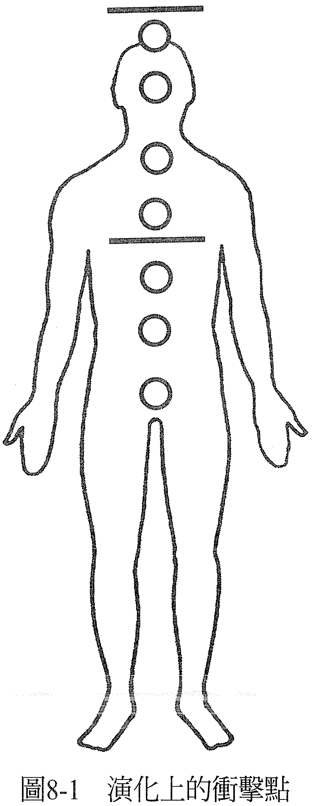
要通过黄色脉论与绿色脉轮之间的阻膜，就必须改变认知，才能让爱的认知变得更明晰。要通过紫色脉轮之上的阻膜，就必须有新的认知能化解在独立自主还是服膺权威之间，显而易见的矛盾或冲突。
一个人决定穿越任何一层阻膜的时候，都要花一点时间，所有的认知才会跟上他想演进的决定。在这段期间里，他会愈来愈认同那些新的优先顺序，作为他做决定的基础。同时，他也会继续回应那些因着内心深处的决定而在生活中引发的情事（疑是“事情”）。
黄色脉轮的认知可能和要控制还是要自由有关，绿色脉轮的认知与爱及接纳有关。从黄色脉轮移动到绿色脉轮的人，如果过去一直活在控制之中，而且在决定要更敞开心胸接纳之后，依然继续紧守控制不放，就可能会遇到一些困难。可能他们生活中的事情会看起来愈来愈失控，仿佛世界末日到了，毁灭迫在眼前，直到他们终于放下控制，敞开心胸接纳。
有的时候，为了刺激他们敞开心胸接纳，会有一个冲击强迫他们放手。这个冲击可能是身体上，也或者是情感上。当它是情感上的，而且非常强烈，这个人可能会经验到所谓的「精神崩溃」，心智的认知过程崩解了，整个人觉得失控。传统治疗也许会让这个人找回他「正常」的认知，但对这个正在演进的个体而言，却不见得是最好的。
较好、较快也较容易的做法是：鼓励这个人去关注那个感觉比较好的新认知，那他就会觉得这个灵性过程是一种突破，而不是崩溃。
然后，当他从新的角度来看生命，他就会明白，是他执著于控制的程度让事情变得辛苦。他会看到他就是这样在创造出自己的不舒服，还有自身的痛苦。他会用慈悲之心看待自己（一直以来的样子），会不再觉得需要捍卫对他已经没有意义、而且事实上也已不复存在的生活方式。
当这个过程极度难以穿越时，这个人或许会觉得好像快要死掉了。虽然这感觉是真的，但并不会危急性命。它只是一种发生在意识里的过程。这个人虽然以前对自己有某种认定，但又同时渴望能用新的角度看事情。若要用新的方式让事情产生意义，就表示旧的显然已经不具意义了。死的是过去的生活方式。
如果这个人坚持紧守旧的认知、旧的化身，那他也许会觉得整个过程就像「小我之死」。只要他还维持旧的认知，以旧的认知来看待他正在放下的事物，那他就会真的有死掉的感觉。如果把焦点转移至当下，放眼未来，这个人就会发觉新的生活方式正浮现出来，同样一个过程却会让他觉得彷若重生。
可以把这视为从一个实相前进到另一个实相，从一个泡泡前进到另一个泡泡的过程。如果把它们想象成两个互有接触的肥皂泡泡，就可以把两个泡泡交接面的薄膜，当成我们之前提到的阻膜（见图 8-2）。
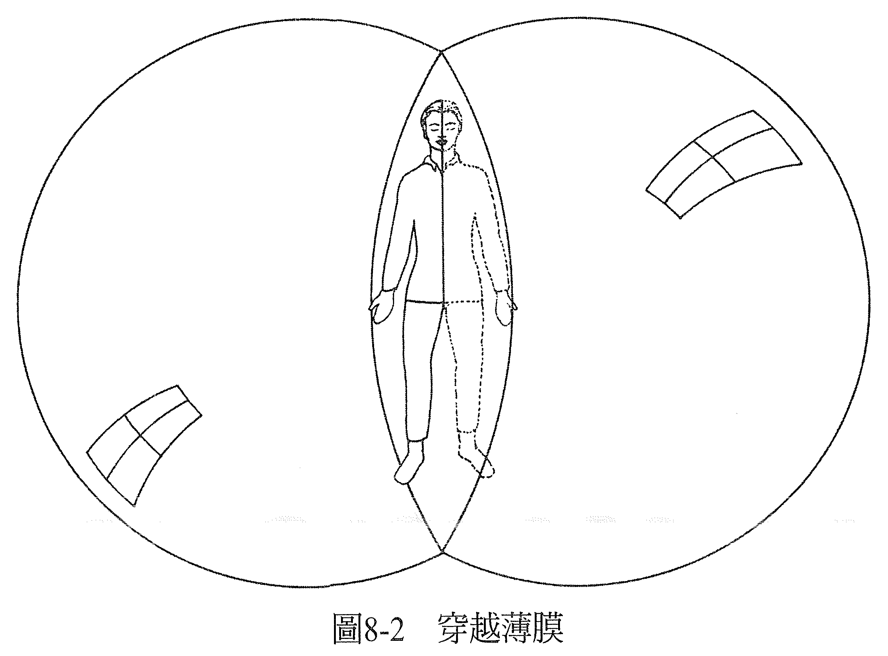
旧泡泡里有些认知，是这个人所认为的自己。他可能会说：「这就是我，虽然我用这些认知来定义我自己，不过现在我想让事情出现不同的意义。」
有了这种改变的欲望后，他开始走出原来的泡泡，朝下一个泡泡前进。他来到两个泡泡交接面的薄膜，这时候，虽然事情在旧的面向已经没有意义，但也尚未出现其他有意义的新面向。落在这时间片段里，在穿越两个泡泡之间的薄膜产生的能量场时，他们的认知也许会很混乱、困惑，这种情况要到进入新泡泡以后才会结束。
若这个人用过去的认知来看事情，用从前有意义的方法行事，那也是没有用的。如果他这么做了，他会发觉有哪些事物是他必须放下的。这时候的关键就是要把这个过程视为一种突破，放眼未来，用新泡泡的认知去看事情。
如此一来，新的认知就会出现，从新的实相之中崭露。事物开始有了意义，但是和以往的方式不同了。走向新泡泡的动作会持续，这个过程会继续，这个人会用新的认知来定义自己，体验到重生的过程。在穿越时遇到困难的人，可能会感到在太阳神经丛和心之间的薄膜处，有些身体上的郁闷感，甚或很严重，不过如果做能量疗愈的话很快就能被释放掉。
如果这个人的太阳神经丛脉轮一直都在活出自由，而不是掌控，那这个过程进行起来会温和许多。从自由转移到接纳，会比从控制转移到接纳容易得多。从自由移向接纳的时候，这两组新与旧的认知在意识上，并不会有那么极端的冲突，穿越阻膜时的认知也不会那么混乱，经验到的会是温和且合理的演化。
也可以用星球群体意识的角度来看这个穿越的过程，星球群体意识是由地球上全体人类的意识所构成。据说这种群体意识也可以有脉轮，和其他任何一种意识一样，也据说它正在进行属于自己的演化，其他任何一种意识亦然。
这个群体意识在每一个脉轮上都花了两千年的时间，全世界发生过的事件都可以反映出群体意识正处于哪一脉轮。过去两千年以来，我们生活在双鱼座时代，也就是黄色脉轮的时代。当时的历史事件都与权力或控制有关，每个国家都只在意自己的问题还有利益，导致规模史无前例的战争。人们已经发展出足以毁灭自己许许多多次的武力。
两千年以前，一位众所周知的伟大存有耶稣在地球上生活行走，他代表的是心轮或绿色脉轮，这在当时是非常罕见的。当他看向四方，他看到的是黄色脉轮有明显失调的迹象（皮肤是黄色脉轮掌管的其中一个部分）——痲疯病横行，那是一种让脸部溃损的皮肤问题。这些症状的存在、人要把脸遮起来的动作，都表示人是因为生命隐含罪恶感，才会创造出这些身体症状，为此我们能了解，这位伟大的存有耶稣，他渴望的是让人类能从自找的无谓包袱中解脱。
如今，我们已经进入某些人口中的宝瓶时代，也就是心轮、绿色脉轮的时代，周遭的状况正迫使我们去关注从绿色脉轮出发的认知。比方说，我们创造出了爱滋病，它就是这个时代的一种状况。虽然医界一直在为这种疾病寻找身体上的解决方法，另一方面，另类治疗界却已经透过改变个人对爱的认知，在治愈这种疾病上小有所成。
现在各国也较有全球意识了，更在意我们身为全球共同体所扮演的角色。人们看事情的时候必须超越国土疆界，过去的冲击与当前令人义愤的情事，正驱使我们做一些和以往不同的事。
虽然仍有部分的人们尚未穿越，他们的认知一直让他们看到全球性的灾难，但或许可以把这些视为是用来刺激全球共同体意识的提升——假使这个提升没办法以一种较温和的方式促成的话。
也可以把这些认知看作是人从黄色脉轮的过滤器来看时，自然会产生的结果，但它必然会让路给全球意识的新认知，变成从绿色脉轮演化得较高的角度来看，人会体认到：为了让自己的需求得到满足，也必须满足他人的需求。
由于这一切是发生在全球性的层面上，所以也包括在群体意识里愈来愈多的个体身上。有愈来愈多的个体正从黄色脉轮通往绿色脉轮。愈多的存有完成穿越，对其他群体意识的影响就愈大，有助加速整体穿越，直到完成为止；我们就能够成为一个全球共同体，良好地运作，每个成员都能找到一起和谐生活的方式。如此一来，疗愈就完成了。
那时候，若真有一个更大的共同体是由许多存有所组成，而人类及地球上的生命只是其中一小部分的话，我们还能做到让他们亲近却不感威胁，或许这表示我们已经做好准备积极加入他们那个共同体。
————在这个世界上，一切都可以疗愈！————
第 9 章 思想形式
当人们不觉得自己是健全的，感到生病了，有时他们会把症状描述成一种物体。他们可能会说：「觉得头顶仿佛压着一个重物」，或是「身体的某边插着一把利刃」。就他们的感觉而言，那里确实有个东西，感觉起来非常真切，仿佛真的存在于物质宇宙一样。
在进行疗愈时，我们会把这些想法看作一种物体，而且真实存在。它们在所谓乙太的层面上以思维的形式存在，乙太是物质宇宙与灵性宇宙的交会处。从玄学、灵性宇宙的角度来看，物质宇宙就投射在乙太这个基质上。我们的思想、目标，我们的意识创造出的画面、我们注入意识的画面，据说都会进入乙太，有如全息图像一般，待时机成熟，就会显现在这个物质世界里。
做疗愈的时候，能量治疗师在得到案主许可后，会进入他的灵性宇宙或泡泡，助他重回健全的感受。凡是案主经验到为真的思想形式，能量治疗师也会经验到它是真的。若案主经验到「仿佛有重物压在头上」的感觉，能量治疗师可以把这个重物视为真实的物体。
可以说在乙太的层面上，这个思想形式是由能量所构成的。能量治疗师能够看到并感受这股能量。他用愈多的感官去专注感受那个思想形式的存在，就愈能让自己觉得它很真实。当这个思想形式对治疗师与对经验到这个症状的案主来说，都一样真实时，治疗师就能够把这个思想形式移除，案主便不会再感觉到它。当案主感到这个思想形式离开了，他就能重回健全的感受。如果说，基于这个症状与他经验到的思想形式有了生理上的支持，而症状和思想形式都已解除，他不再感觉到它们的存在，那么这个生理支持必然也会跟着不复存在。
如果案主感到头痛，有如头上压着重物，身为能量治疗师的你可以决定要看到并感受到这个重物，当你经验到它是真的，你就有能力移除它。然后，那个叫做头痛的经验就不会再被感受到。案主会感觉它离开了，他恢复健全了。如果这次头痛有生理上的支持，那这个生理支持一定也同时会被移除。
如果案主说「觉得像利刃一样」，那么利刃就一定存在。你可以决定去感受到它、看见它，然后从案主的感觉中把它移除。这样，疗愈就发生了。
在做的时候，你一定要把这些东西当成是真的。举个例子，把刀移走以后，你可以想象那里剩下一个洞，然后你必须处理那个洞。你可以把洞填起来、合起来、缝起来，甚至把洞也移开。毕竟，洞也是一个东西。如果我们一开始做的时候，案主的身上就有一个洞了，然后我们移除了这个洞，案主身上就没有洞。他们就完整了。
在万有的乙太层面上进行疗愈时，是没有任何限制的。你要想象什么样的故事都可行，要坚持让自己相信你知道你正在想象的那个故事。如此，疗愈就能发生。萨满的能量治疗师就是这样在做治疗；把症状看成石头、虫、或其他的东西，接着从身体里移除，在心中创造出「已经治好了」的感知。菲律宾和南美的心灵手术（psychic surgeon）也是用这种同样的方法做治疗（见图 9-1）。
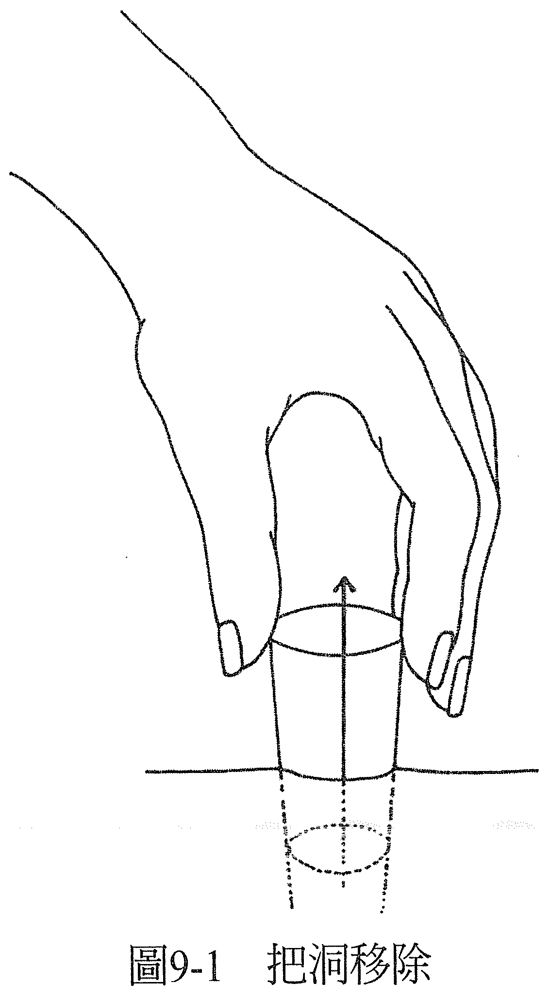
当你把这些东西视为真实，要从案主身上移除的时候，你必须处理掉它们。因为你用来形容感受的语言会创造你的实相，所以你可以决定当你把这个东西丢到地上的时候，它会于两秒内消灭，而且你可以看着它消灭。或者，你可以决定要让这个东西回归到万物本源的大能量球中，或是若你决定要拿着这个东西时，你可以用其他的方式重新诠释你拿着它时经验到的感知，例如把它诠释成是对疗愈有帮助的耀眼白光。
回到前面的例子，你把洞从案主身上移走，让他变得完整后，你可以把这个洞留起来，收进口袋里。假如你日后治疗其他的人，比方说在他的心附近有一座巨大的石墙，你就可以把洞从口袋里再取出来，放到墙上使用。然后，墙上就开了一个洞，你可以透过它去接触对方的心。洞可以是很有用的工具。在这个层面上，显然你拥有无比的创造力，想怎么做、要怎么想象、用什么来帮忙解除案主的这个症状都可以，只要你愿意让自己相信你所想象的故事就行了。
若你把疼痛想象成能量流动不顺的感觉，是因为内部压力太大，需要释放，那你可以用压力阀来缓解疼痛。你可以用这种方法迅速纾解任何一种疼痛，尤其对治头痛特别有用，不管这头痛在那里多久了（见图 9-2）。
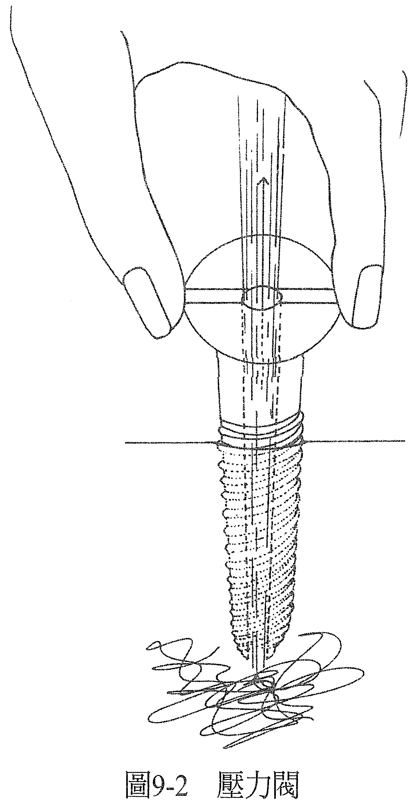
压力阀看起来可能像是一把中空的钻子，钻入这个人感到有压力的地方。当压力阀碰到这个地方以后，你可以看着压力往外释放，发出咻一声案主会同时感受到这股释放。虽然这次这个思想形式是由身为能量治疗师的你的意识中开始，但你和案主都能一同感到它是真实的。
做完后要记得把压力阀拿起来，因为下次还可以再用。
思想形式可以按照案主所形容的症状来进行，把症状当成一个物体，然后能量治疗师就来处理这个物体，这很重要，因为在案主的意识当中，就是这个东西阻碍了他，令他无法感觉健全。
思想形式也可以由能量治疗师来发想，只要能吻合案主的描述即可。例如，能量治疗师可以把无法灵活运动的膝盖看成「生锈了」，所以用乙太油来治疗这位案主。思想形式可以是治疗师想象出来的物体，用来帮助纾解症状，例如压力阀。
如果治疗师知道解剖学或生理学，也可以派上用场，让有缺陷或运作不良的器官得到修复，例如帮「发炎」的肌肉灭火、唤醒「麻痹」的器官。
运用这些思想形式，也可以帮助人脱离依赖，无论是对药物、观念还是关系的依赖。在英文里，当遇到依赖或上瘾的情况时，我们会说这个人「被钩住了」（hooked），一旦他们无法得到想要的东西，就会变得很不舒服，不舒服的轻重反映出他们被钩住的程度。当他们觉得不舒服的时候，这感觉也会发生在身体的某个地方。当你看入案主的这个地方，你可以看见一个钩子，然后把它拿掉。钩子被拿掉以后，案主就不再被钩住了。
当然，这要在案主也由衷希望走出瘾头时，才会有效。如果他们并不出自本心，只是因为刚好有人想帮他一把就随他去处理，那与发自内心由衷认为受够了上瘾而且准备好放下的人相比，效果当然不会那么好。
就连是对药物或毒品的上瘾，钩子也会出现在其中一个脉轮里。记住，问题不在于药物或毒品，而是喜欢上瘾的性格，是这种性格一心一意地想要得到药物。于是钩子会出现在真正有瘾头的地方，或许真正上瘾的是安全感或权力等，然后，治疗师就可以把钩子从这个地方移除。
即便从脉轮的定位来看，需要的是垂直的健全形态，因为人是沿着一条垂直轴线达到所有脉轮的平衡，但有些人需要的是横向的平衡，也就是说，他们的男性面和女性面之间不平衡。这种情况可能会显现成一边的身体有惯性的症状或瘫痪，或是双眼不协调，或闵读障碍，明显可以看出大脑的左右两方彼此并不「交谈」。
当阳性脑和阴性脑之间没有对话，通常代表母亲和父亲之间没有沟通。如果父母之间有极度不和谐的对立情事，不难想象小孩会有多么难熬。为了与父母其中一方取得连结，他们不得不和另一位切断关系。这样的小孩很难同时对两种能量敞开心房。
针对这种情况，我们可以做一个快速的脑部手术来化解它（见图 9-3）。
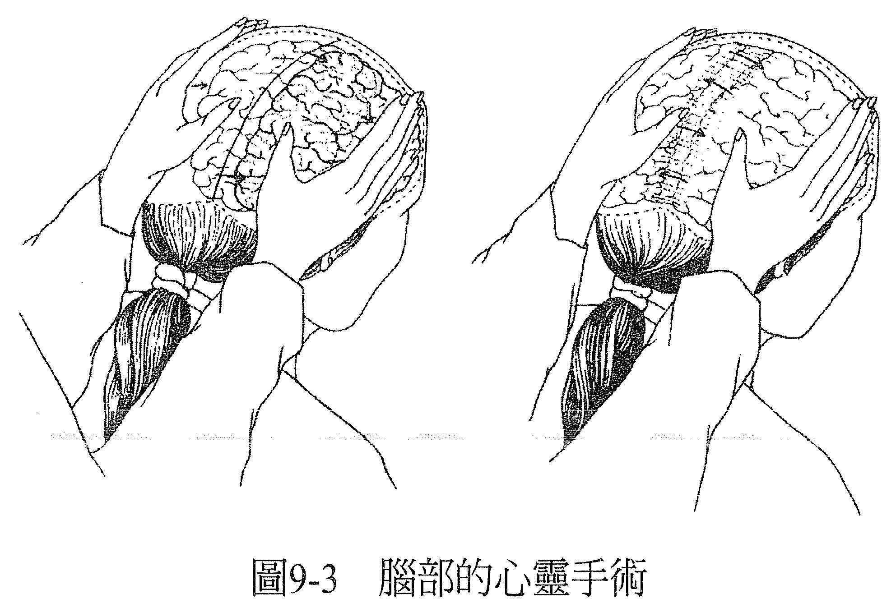
身为能量治疗师的你可以低头看着案主的头，想象你看到左右两边的脑。你想象其中一边的脑进入了另外一边，在那里待一段时间，然后再出来。接着你把相同的这个过程反向再做一次。
如此一来，虽然原先存在一道墙，但现在，两边的脑都有机会去体验另外一边，然后沟通的可能性就会出现。起初，这个症状是基于两边的脑之间没有对话，但在现在的状态下，症状就可以解除了。
虽然这里提到的例子有些听起来或许很荒唐、难以置信，好似笑话，但全都是有能量治疗师正在使用，而且有效的。我们相信，只要一个人可以做到，人人都可以做到，每一个我们认为不凡的人，都只是让我们看到自身能力的范例而已。我相信，你也能成功运用这些手法，至于有多成功，端看你愿意相信的程度如何。
毕竟，凡你信为真者皆为真——对你而言。
————在这个世界上，一切都可以疗愈！————
第 10 章 根部，枝干，顶端
当你感到自己很健全，你不只是在脉轮的层面上都能保持均衡，你也能透过红色脉轮整合与大地的连结，并且能敞开地接受和紫色脉轮有关的宇宙能量。
在进行能量疗愈的时候，若红色脉轮是均衡的，可以请它把根往下传送，到案主的腿再进入大地，并观察这么做以后会发生什么事。你看到的画面会显示案主是否愿意从有用的来源取得滋养，就像植物愿意把根扎入大地，并合理地预期这么做会令它的需求获得满足一样（见图 10-1）。
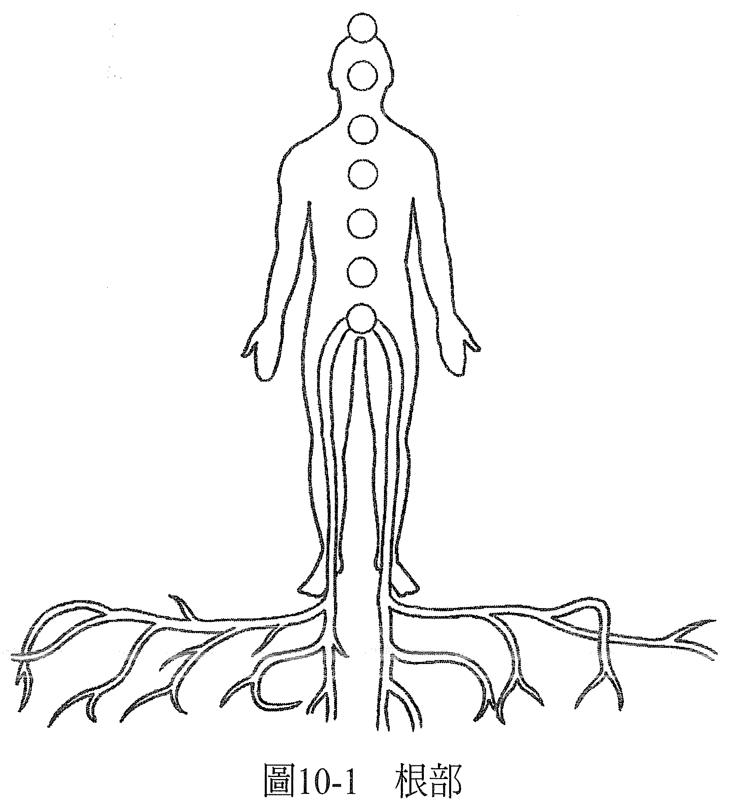
当根不愿意往下来到腿部，表示案主不愿向外寻求满足需求的方法，而这种只想自给自足的态度不仅没有必要，也没有帮助。当然，在必要的时候自给自足是件好事，可是若在非必要的时候坚持，可能就是反映过往的经验令他产生抗拒，这种抗拒对案主没有好处，只反映出了他们打从心底相信：就算真的向外连结，他的需求也不会得到满足。
注意：疗愈一定会与案主的平衡状态，还有他们真正的样貌、现在进化到哪里有关。因此，除非他们的较高自我（也就是内在存有）想让治疗师看见需要改变的地方，否则是不会显现给治疗师看的。无论如何，在疗愈结束后，治疗师和案主都会觉得原本可能是问题的，已不复存在。
假使左右两只腿都有抗拒，反映出了基本上他并不相信自己被允许可以从任何地方获得滋养。若只有右腿，反映的是他不信任向男性寻求滋养是可以的，若只有左腿，则是不信任向女性寻求滋养是可以的。
如果这个卡住的地方已经存在好一阵子，可能反映的是和案主的母亲或父亲有关的基本信念；若是比较近期才有，能量治疗师可以和案主一起检视他有哪件生活事件可以对应到症状最早出现的时间点，然后应用上述的解释去看。总之，能量治疗师要持续鼓励根部往下走到腿和脚，移除任何出现在途中的阻碍，不管是看着根部自己移除障碍，或是透过处理思想形式的方式都好。
当根部走到脚掌时，治疗师可以想象案主的脚掌下出现了能让根部如鱼得水的画面，可以是森林、农场、花园、田地，或任何有营养的沃土处，根可以轻松自如地深入。每当不滋养的画面冒出来时，能量治疗师就必须改变它。
不管出现什么画面，呈现的都会是当时案主对于生活在地球上的感觉，以及（或是）案主与身为营养能量泉源的母亲之间的关系。也可能代表案主当时和家里的关系，或是与安全感、生存、信任有关的问题。
根部底下有石头的话，虽然显示出一种踏实的感觉，但不很滋养。出现大海，表示案主相信代表安全感的东西都会把他淹没，或是陆地上没有他的家。火山则表示他相信地球上的生活充满了令人措手不及的意外。深邃的空间表示案主和母亲或滋养来源之间有距离。
能量治疗师可以改变任何一种不是最好的画面，例如透过移除障碍改变画面的细节（改冬为夏、改黑夜为黎明、改沙漠为绿洲等），或是把根部移到更欢迎它的景色里（从墓地移到公园、让船靠岸、改变地理位置等）。当身为能量治疗师的你这样做，你就是在改变案主意识里的一个画面。这画面原先呈现的是对他们没有帮助的信念系统，但你把它变成了会带来成果的画面。
当场景是最佳状态，你可以请根部深入大地，这时最棒的画面应该是——地心有一个很滋养的球，正红色，当根一碰触到它，它马上就会被根吸往地球表面，沿着腿往上，进入红色脉轮（见图 10-2）。
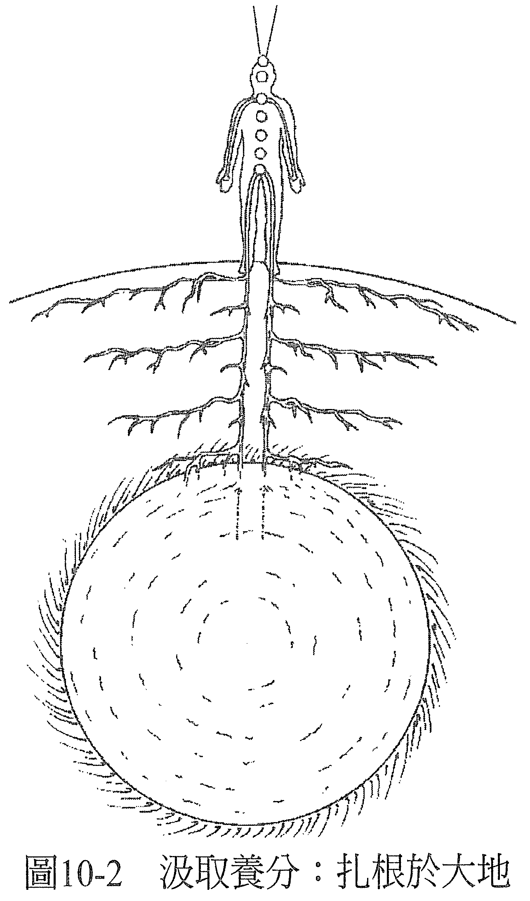
（最初）这样的场景反映的是案主与身为滋养来源的母亲的关系，（结果）也反映了案主与一般滋养来源的关系，无论是金钱，还是是否允许内在存有获得滋养。
还是一样，若出现的场景并不是最棒的，你可以改变它，如此一来，案主就会经验到意识有了转变，很多人在做完后都说：脚掌的知觉不一样了，与大地更有连结感，也更临在于身体里。
和请求红色脉轮扎根到大地里的做法一样，你也可以请蓝色脉轮将枝干从双臂延伸出去（蓝色脉轮和表达有关）。这时候，你会看到案主的信念，他们的意识里对于表达自己的需求和感受，当他们取得并拥有自己想要的、能让他们快乐的事物时，他们有什么感觉。
枝干不应只停留在手掌处，应该要继续以蓝色雷射光的形式延伸出身体，于案主前方会合。这会显示出案主设立目标的能力，以及当他这么做的时候他认为会发生什么事。蓝色脉轮和乙太有关，实相就投射在乙太这个基质上，它也是物质实相与灵性实相的交会处，所以蓝色脉轮代表他们实现目标、在物质世界中把目标创造出来的能力（见图 10-3）。
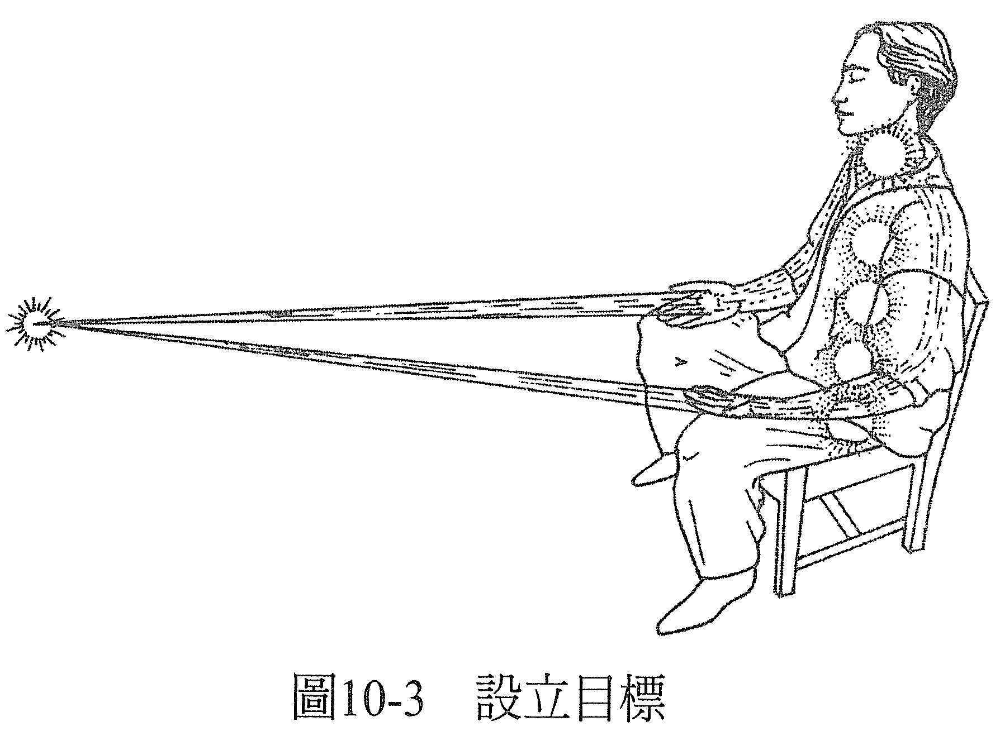
若雷射光没有延伸到手掌之外，表示案主懒得设立对自己重要的目标，反正他们也不相信这么做就会成功。当这种情况出现在能量疗愈时，反映出的并不是对案主的真实，也不是真正的他们该有的平衡，更不是他们目前演进的程度。而这需要改变一下。
若光束没有集中在同一点，可解释为案主的渴望并无法让他们快乐。那么，能量治疗师就要像用车灯打光一样，为光束打光，直到两束光都集中在同一点为止。距离应该要是治疗师觉得「对」的距离。较近的代表近期的目标，较远的代表远程的目标。最佳的情况是案主有能力设立任何时期的目标。
看着能量光束沿着手臂往下流动，将能改善影响肩膀和手臂的症状，而看着根部沿着双腿往下长，将能改善影响腿部的症状。
在处理紫色脉轮的时候，能量治疗师要先看到它处于最佳状态，也就是清欢的紫色能量球，然后治疗师一边触碰紫色脉轮顶部，一边请紫色脉轮打开，看看它打开的时候会发生什么事。
最佳的情况是——紫色脉论从顶端开始展开，美丽的紫色花瓣一片接一片舒展，宛如莲花绽放。如果不是这样，能量治疗师就需要移除某个处在这里的障碍了（见图 10-4）。
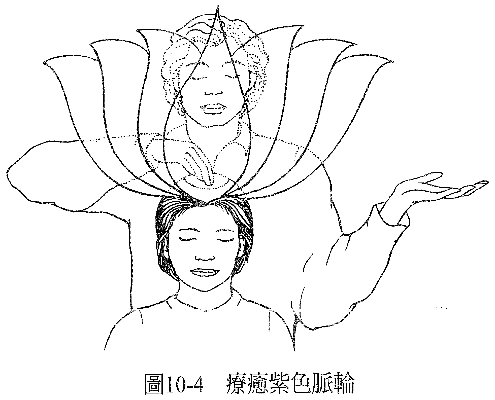
因为紫色脉轮代表的是案主最深层的意识，所以当它展开时，你可以从紫色脉轮一路看穿到红色脉轮。如果看得穿，就请求白光从上方进入紫色脉轮，直通至案主的脚趾为止，然后从脚到头将他充满。当白光来到一个脉轮，这个脉轮就焕发着该有的光芒，比以往都还要耀眼清澈。等白光满溢紫色脉轮，它就会环绕着案主，同时将他充满，这时候，能量治疗师就知道疗愈已经完成了（见图 10-5）。
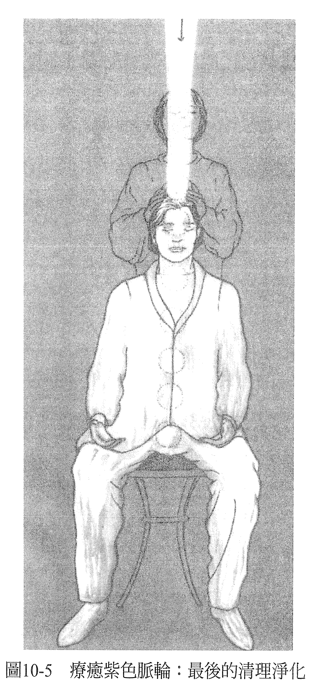
最后一个画面应该是案主充满了白光，每一个脉轮都耀眼地焕发着它天生自有的色彩，根部从地心汲取养分，蓝色的雷射光从掌心发出，交会在案主前方的某处，而他的顶轮宛如莲花绽放般，白光继续流入案主，溢满他浑身上下。然后，案主应该会觉得和做疗愈之前相比，感觉颇不一样。问他看看吧！看看疗愈发生到什么程度！
————在这个世界上，一切都可以疗愈！————
第 11 章 时空之旅与前世
按我们对意识的定义，我们认为存有有三个层面，称为：灵魂、心灵、人格模式。「灵魂」是你那个会一世又一世旅行的部分，它在每一世都有不同的样貌，形成我们所谓的心又灵。「心灵」是你的意识在某一世采取的个人样貌，你会因你那一世心灵的个人目标，而有个人的经历及天赋。
意识的本质就是会步向完成，也就是它会完成这个意识的目标所呈现的画面。当你有一个目标或欲望，欲望的完成也就存在了，你正一直朝这个完成前进。同时，外在的事件显然都在让那个完成向你更靠近。在一世里，当环境给你机会去接受一个你曾经请求过的经历，你总是可以选择要接受或是拒绝它。你曾在意识里输入一些画面，代表你曾有过的欲望或目标，这些画面带来了一些经历，你的一生就都在接受或拒绝这些经历。
当你已经来到一世的尽头，但依然有未竟的目标，你有机会选择再用一世去完成那些未竟之事，让你的灵魂化身成另外一世的心灵。当你这么做并创造出更多的目标，这个过程就会继续下去，最后你会经历到所有你曾经请求过的一切。然后，你会去到其他地方，在另一个宇宙做别的事。这样的过程恒久地持续。唯一不变的就是「变」。我们透过改变而学习，透过学习而成长。我们原本就是意识的本质，而意识的本质就是透过学习、改变来成长。
当你以人的形体来到这世上，你是心灵的化身，再加上一个心智。你一边学习，并因此而得到别人给你的爱，你会愈来愈用你的认知，而不是用你的本质来认同自己，你会建立起对所谓「人格模式」的认同感。
有的时候，人格模式与心灵并不一致，可能会朝不同的方向拉扯，带来紧张；可以说当这两者关系变得一致，紧张就会被疗愈，疗愈会发生在人格模式的层面上。
而每个心灵都有其脆弱之处，探讨这些脆弱的地方，让它们造成的失衡得到疗愈，疗愈就会发生在心灵的层面上。
据说，在死亡那一瞬间抱持的念头，会在灵魂离开身体后，继续驻留在存有里。我们的意识中有一个部分会在结束一世以后，又选择进入另一世，它就是所谓的「灵魂」。因此，从前世带来的失衡状况，必须要在灵魂的层面上疗愈。
虽然情况是前世的紧张所造成，但这些紧张仍然会与当前的这一世有关联。
例如，几百年前有些人选择来到地球上成为能量治疗师，当时能量疗愈不像现在广为大家接受，所以这些人可能因为选择奉献一生帮助别人，却受到迫害、折磨以及杀害。为了保护自己，这些能量治疗师集结起来，反抗社会里那些压迫他们的人。
西方传统教导大家：上帝是一个外在的存有，是祂决定我们会变得怎么：因此，这些能量治疗师也不会知道要从「一切始于自身意识」的观点来看。自身意识其实也就是内在的上帝，是他们自己决定要带着疗愈的使命降生，并不是外在的上帝赋予他们这项任务。
于是他们很多人都选择了要生上帝的气，因为祂容许这种不公不义的事，戕害降生在世上助人的存有，他们带着这些想法过世了。选择生气招致的结果是，他们在灵魂的层面上关闭了紫色脉轮（和人与父亲、权威、上帝的关系有关的，就是紫色脉轮）。
等到要重新降生人世的时候，他们决定选择会反映出他们当时能量系统里失衡状态的父母，好疗愈这个失衡。于是，他们选择了没有真的能守护他们，或是让他们有理由生气的父亲。若在这时候，他们能有机会明白自己所经历到的一切，其实源于自身的意识，或是去疗愈今生和父亲的关系，或是结合上面两种方法，疗愈就会发生。
可以看到，纵使最初创造出这个失衡的决定发生在前世，但今生还是有实际的理由让他们做出相同的决定。当今生有了疗愈，前世的影响力也就跟着清除了。
虽然探索前世可能会帮助我们体会自己不朽的灵性本质，但也可能会让我们有理由逃避今生的问题，这样的话，对我们的演化就会产生反效果。若我们继续用这种方式逃避问题，那么下一世就将继续充满今生的紧张，依然等待纾解。唯有在对前世的了解能帮助我们化解此生的问题时，一切才有助于疗愈，才能说是对我们有帮助的。
既然我们并不受时空的限制，那我们可以想象自己回到以前的遭遇，改变当时的某件事，然后再回到现在的时间点，看看疗愈带来的正面效果。
一位女士告诉我，她有一个前世是欧洲皇室的一员，当时她有小孩，适逢战乱频仍，有一次入侵的敌军把她的小孩抢走了。当时她很想尖叫，但这声尖叫从没获得释放，因为她还来不及叫出声就被杀了。她相信是因为这样，所以今生喉咙一直有问题。
那次进行疗愈的时候，我看到城堡里里外外打仗的场景，一个士兵掳走她的孩子，另一个士兵正准备用矛刺死她。我向第二个士兵的眼睛吹了一口烟，让他迟了一下才伸出矛。她叫出来了，接着被杀。毕竟，她的大限到了，她没有孩子也不想活了。不过她有机会把这声尖叫从喉咙里释放。这次疗愈完之后，喉咙就好了。
另外有一次做能量疗愈的时候，我有一种感觉是案主（一名成年男性）像个刚丧父的孩子。我的第一个冲动是想把这名孩子抱起来，找方法安慰他，可是他当时不想这样或是不需要这样，所以我只是站在原地伸出我的手。男孩握住我的手，感到很开心。我们一起散了一小段的步，往一个方向走一走。我们只是知道彼此的存在，非常专注于当时经历到的一切，并且用心感受这是我们一起经历的。
接着，我们一起朝另一个方向走了一下，也只是在一起，一起感受这个经历。然后，我们回到了起点。男孩满足了，他很快就长大成现在正在接受疗愈的成人年纪。
这孩子在长大的过程中感到有缺憾，因为他没有机会和父亲分享他的经历，当他在疗愈的过程中活出了这样的经历，他的意识就不觉得他缺少这样的经历，他就能够前进到当下。我们也可以说，他父亲的心灵也在现场参与了疗愈，透过能量治疗师发挥作用。
这些场景自己出现的时候，都是主观的经历，宛如观赏并参与由某人自身活泼的想象力所上演的迷你影片一样。当然，有趣的地方是，这些想象的电影通常同时是由能量治疗师与样案主两人一起经验，带来了疗愈。当这种情况能缓解症状，就算是被建构出来的，我们也必须承认它就是一个有效的实相。
重要的是要了解：疗愈的过程没有任何限制。虽然能量治疗师一开始可能不知道何谓时空旅行，但在疗愈过程中遇到的情况可能会导向这个方向。如果遇到了，治疗师可以确信不管疗愈的过程中出现什么，都是疗愈的一部分，可以用他感觉对的方式回应。
然后，我们可以回顾那些出现的鲜明情境，我们创造的效果，好好赞叹意识的作用、疗愈的面向、以及我们从中学到的智慧。
赞叹之余，最后我们可以把它视为平常的新实相，然后我们就可以往前看，期待意识和疗愈会自己出现更多的面向。
这个过程会永无止尽地延续下去。
这就是我们在此可以做到的事。
————在这个世界上，一切都可以疗愈！————
第 12 章 不同层次的体验
每个脉轮不仅都代表你意识的一部分，也和构成「你」的其中一个能量体有关。它还表示特定的意识层面，一个让你用不同角度看事情的体验层次，以及与你存有的中心有关的生命境界。
因此，若你同意你是驻于身体里的一份意识，那你内心对自己最深的体验，必定是所谓的纯粹意识在紫色脉轮的中心焕发着智性之光。
它是你意识的最深处，与因果体、即意识的因果层面有关，因为若一切都始于自身的意识，而意识的最深处代表了你最深的渴望和目标，那它必然是一切之所以发生的根源。它也显示了上帝的住所，上帝存在于你之内，祂以你的样貌存在，并透过你的双眼来看世界（见图 12-1）。

在一世的时间里，灵魂会成为个体化的意识，即我们所谓的心灵。它宛如灵魂在那一世穿着的外衣，所以是从中心往外的第二层体验。
心灵与靛蓝脉轮以及所谓的菩提体、意识的菩提面有关（见图 12-2）。也有人说它代表：佛陀或其他成就了同层次的觉悟者所拥有的那种感知层次。当然，我们知道它也表示各种层面上心灵对心灵的沟通，我们也是从这里在观照从内心显化于外的一切。

以此推论，从中心往外的下一个层次，必然与蓝色脉轮有关，也和乙太的元素有关，物质实相就投射在这个乙太的基质上，它是物质宇宙与灵性宇宙的交会处。它就叫做乙太体，意识的乙太层面（见图 12-3）。在物质世界里，它是化现成物质的层面，思想形式就存在于此。
接下来再往外的层次是星灵体还有星灵的层面（见图 12-4），与绿色脉轮有关。有人说通往这个层面的关键是「无害」（harmlessness），这是一个与世间万物连结的面向，由绿色脉轮（即所谓的心轮）代表。
从中心再往外是心智体，与它相关的是黄色脉轮、心智、存有中与心智有关的层面（见图 12-5），我们称之为人格模式。这个层面是西方社会所认为的正常生命状态，是「正常」认知的发源地。不过我比较喜欢称它们为常见的、平常的，但不叫「正常」的，不然听起来好像大多数的传统社会仍然认为我们觉得正常的思考方式是异常的。接下来，再往外的下一层体验是情绪体以及情绪的层面，与橙色脉轮有关（见图 12-6）。最后是物质身体以及物质的层面，与红色脉轮有关，它代表最外层的体验（见图 12-7）。

当你关注的是物质的身体，可以说你投注在红色脉轮的层面上，你存有里最厚重的振动频率。从存有的这个层面散发的能量，相较之下是最小的。当你敞开自己，进入内在存有第二深的层次，会来到情绪体，它和橙色脉轮有关，你会经历到较为细致的振动频率，没那么厚重，因此将能散发比较多的能量。当你比较敞开时，就会经验到它。
当你愈朝这个方向发展，你会发现你愈敞开、愈深入存有的更深层，也就是「较高」的脉轮以及更精细的振动频率、较不厚重的能量体，能够流通的能量就变得愈多，最后你会来到因果体。然后，你就是一团纯粹的意识，散发着无限的能量。
你的每一个能量体都在其他的能量体之内，互相穿透，每一个看起来都像你，各以不同的振动频率和其他的能量体共存。
我们讲到出窍的经历时，这类经历指的是脱出身体之外，我们可以按照它牵涉到哪些能量体来分类。因此，若案主的人坐在一个房间里，但同时描述着另一个他们正在去的地方，而他们的身体还在运作，那可以按照经验到的情况，判断出是哪个能量体（心智体、星灵体或乙太体）去了那个地方。
另一种经历是意识出现在其他的地方，但身体没有在运作，这种情况叫做心灵之旅；当我们离开身体不再回来，可以说离开的是因果体、灵魂。
在昏厥、癫痫发作时出窍，是松脱了和身体有关的红色脉轮。在这样的情况下，可以重新建立红色脉轮里的红色，把根传入大地，从大地汲取养分到双腿、再到红色脉轮，借此将这个人重新带回身体里。
当你的意识驻于某个脉轮，表示你活在和那个脉轮有关的能量体里，透过那个脉轮来看世界，也就是从与它相关的层次来看世界。
去经历不同的层次，就像待在不同的国家一样，事情会按照不同的原则，以不同的方式发生。因果关系就不一样了（见图 12-8 ~ 12-11）。


在黄色脉轮与它之下的层次上，我们会很在意自己以及自己的需求，物质上的因果实相，还有情感上的需要以及快乐原则（pleasure principle），意即会去寻找让自己感觉最好的。在这个层面上，事物以特定的方法发生：当你感到匮乏，你想拥有、或是没有某样东西，你是有方法可以得到它的，但你必须做点什么。你必须付出努力，或是观想、使用肯定语（affirmation），总之你必须做点什么才能得到。如果你不做，就不会得到。
有一说，星灵层面的其中一个部分是无害，当你从这个角度去看，你会明显看到每个人都在用自己的方式表达爱；有的时候在化解错误认知之前，会因为觉得没有爱而产生反弹。爱显然是让我们相聚的结合力，是把宇宙万物连结在一起的宇宙黏剂。从这个层面上，我们可以看到如何在不伤害他人的情况下，满足自己个人的目标。事实上，我们已经看见了满足别人的需求，正是让自己的需求也得到满足的关键。
在蓝色脉轮的层面上，事物和在黄色脉轮上相比，运作的方式又不一样了。你从不感觉匮乏，因为你感受到的是一个丰盛的宇宙。你想着一样东西，你不费吹灰之力就可以得到。如果你努力，就是把自己放在黄色脉轮，那么原本要透过蓝色脉轮显化的事物就不会继续存在于那里了。蓝色脉轮代表的是丰盛的状态，最不抗拒的道路、不费劲地顺势而流、感谢你所得到的，都是通往此一状态的关键。在这个层面上，你要得到，就必须无为。
在蓝色脉轮里，我们经验到完美，一切都发生得相当完美，我们在对的时间来到对的地方，和对的人在一起，或是在对的时机里单独一人，做着在那一刻觉得对的事。我们很自然会说：「我爱我所在的地方。我爱与我在一起的人。我爱我在做的事。」
到了靛蓝脉轮，生命开始像个美梦，完美的感觉更强烈了。我们会觉得自己就像圣灵，过去当我们与祂连结时，都不认为祂就是我们，可是祂想让我们得到一切我们真心想要的东西；我们会觉得在实现自己的愿望时，也同时在实现圣灵的愿望。耶稣就是在这个层面上，祂会说：「天父与我为一。」
我们也会直接意识到灵体之间的对话，无论这些灵体是否拥有物质形体，还是代表其他的东西，例如大自然的精灵，国家之类的团体意识精神，或是「无生命」的物品，例如手机、建筑物、机器。
我们会明了共同造物的互动变化，灵体与灵体之间的交互作用，因此也会知道意识在物质世界里显化了什么。我们会直接看到那意识里的、还有意识外的物质世界两者之间的关系，而且不只看到自己的，也会看到其他造物者的。
在因果界的层面上，我们知道：全是意识在创造它所感知的一切，就像为了自己的兴趣而播放的电影一样，我们看到所有发生的事情都只是自身意识的结果。我们会看到所有存在的一切、我们所是的一切，都只是那纯粹意识的一部分。
合一不只是个概念，更是直接的体验。显然一切都是内在的，而且因为我们有自由，可以选择采用任何意识状态，毫不受限，所以我们有能力采用其他存有、物品、甚至是上帝的意识，仿佛那就是我们自己的一样，于我们的内在去经验它。你会直接体验到「我们就是我在」（We are I am）这几个字的含意。
我们会经验到自己是纯粹的意识，创造一场梦，并经历到所有的创造都是这场梦的显化。我们会觉察到在这场梦里做梦，宛若在一场清澈发光的梦里做梦一样，然后我们决定这场梦里要发生什么事，没有任何限制。
我们梦到骨头可以修复，肿瘤消失，瘸子恢复行走，盲者重见光明。梦，没有规则。想梦什么，就梦什么。我们可以梦到自己的能力无远弗届，可以疗愈所有现身想被疗愈的一切，我们知道在我们做的这场梦里，在自身意识所创造出的这个场景中，在自己这场梦里用自身的认知所创造出的实相中，没有治不好的病。
————在这个世界上，一切都可以疗愈！————
第三部 如何操作——创造与共同创造
第 13 章 接受能量疗愈
有一个故事：一个女人得了癌症，医生告诉她只剩两个礼拜可以活了。她去菲律宾找一位心灵手术治疗师，他帮她做了治疗，告诉她她已经好了。她不相信，两周后，她还是死了。可是做解剖的时候，医生没有在她身上找到任何癌症病兆。
对每个人而言，认知会创造出实相。当然，对接受治疗的人（案主）而言是如此，对能量治疗师而言也是如此。当我们把能量疗愈看成一个共同创造的过程，就会发现：案主若不是会干扰疗愈的过程，就是会在他自己的意识里创造出最佳的环境，让疗愈得以发生。在接下来的两章里，会探讨案主（被疗愈者）这一方的认知，以便支持疗愈的过程，增加成功的机率及程度。邀你透过案主（被疗愈者）的眼睛来体验疗愈的过程。
当我们提到「认知」的时候，指的是你（也就是案主）选择去想或感受什么，是你去选择如何诠释一些事件。现在我们都知道，总是有选择在。
被疗愈者可以被动地允许疗愈发生，或主动地助长这个过程。你不一定要真的相信当下发生的事，或是相信能量治疗师他的实相架构，你只要不挡路就行了。重要的是，开一扇门，让好事有机会发生。例如，你可以说：「好吧，反正试试看也不会怎么样，说不定还会有好事发生呢。虽然我不懂，但它可能会有帮助。」那你就是被动的，但你敞开心胸，愿意接受疗愈。 想更主动的话，你可以增强「你的疗愈「此刻」正在发生」的这个认知。
1 准备
当能量治疗师和案主在互动的时候，最好的情况是案主主动请求治疗。有时好心的朋友或亲人会帮案主找能量治疗师做治疗，但这不一定是当事人本身的意愿或渴望。有时候，案主并不认为能量疗愈是必要的，或是因为某些原故，他不觉得和能量治疗师一起进入疗愈过程是一件自在的事。这点必须要尊重他。
帮一个不想得到疗愈的人进行能量疗愈，就好像在对牛弹琴。你会浪费时间，牛也会觉得烦。
是案主请求疗愈的话，有可能是他们自己先开口提出请求，也可能是能量治疗师先释出提供协助的意愿，而他们也想接受。如身体不舒服，能量治疗师会问你：「我可以帮你什么吗？」或：「我是做能量疗愈的，我可以帮你吗？」你或许会回答你希望能够痊愈。也可能是你主动去找能量治疗师，请求疗愈。
表达想痊愈的渴望时，最好要清楚直接，不要只是暗示。就像能量治疗师与案主在签约一样，协定好要做一件事来满足案主的需要。话说得愈直接明白，案主就愈清楚他身体经历的事，还有（或是）意识需要的改变。比方说，如果你有痔疮的问题，不妨就直说出口，不要说：「呃，我的红色脉轮有点小问题。」若你有爱滋，你也要直接说明，表达出你渴望痊愈，期望它发生。换言之，通常案主若能明确地告诉能量治疗师他哪里需要疗愈，这样效果会最好，而且要尽量开诚布公、直接、清楚、扼要。
「我想痊愈」这几个字就表示有需要进行一次疗愈。你承认在你身上、你的人生有个地方没有如你所愿，你也接受了这就是你在疗愈之前的情况。你承认这次的疗愈是你想要的，你希望这个状况能够改变，而且你已经准备好让改变此刻就发生。
你也是在表达出你期望它现在就发生。当案主请求做一次能量疗愈，能量治疗师就会接受，期望它发生，在做能量疗愈的动作时，要和共同参与这次治疗的存有创造出一致的目标及意念。
这部分完成以后，就好像电影开演了，而结局也已经知道了。电影的结局就是疗愈已经开始，只是还没有演完。有点像看庞德的电影，在你坐下来以前，你就已经知道结局了好人赢、坏人输，世界得到拯救，庞德抱得美人归（通常是在床上）。
虽然每次都一样，但我们还是坐了下来，对于这次会怎么演感到兴致盎然。能量疗愈也有点像是这样，结局已经确定了，疗愈已经发生在未来，剩下的就只是要把它演完，看着它在物质的外在实相里显化。意念已经确立。当这些准备工作做好了，真正的疗愈形式就可以开始进行。
不同的能量治疗师有不同的疗愈方式。有些人喜欢请案主躺着或坐着，让他们保持放松和敞开。当然，任何能量治疗师要求的姿势，都是可以让疗愈发生的。但如果遇到意外事故，有能量治疗师在现场的话，这时候伤者需要坐在椅子上还是躺在床上？是否要有柔和的光线、点香、放音乐、保持安静……才能展开疗愈？就不适合由能量治疗师来决定了。不过，除了这类急救的情况外，能量治疗师是可以决定要用哪一种方式进行对他是最好的。
身镜系统倾向采用的姿势是：案主坐在没有靠背的椅子上，让治疗师可以接触到案主的背部以及脊椎底端。如此一来，案主全身的每个部分都能够被触及（见图 13-1）。
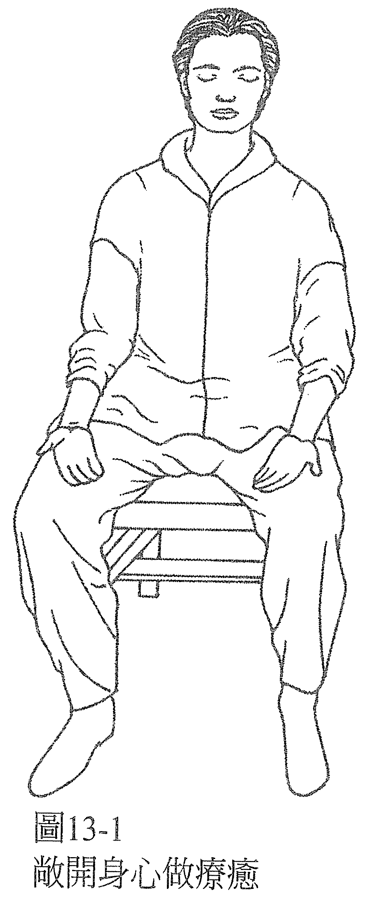
案主坐着的时候，双脚平放在地上，手放在大腿上、掌心朝上，闭上眼睛。这个身体姿势反映的是内在敞开、怀抱正面期待的心态。闭上眼睛，好让案主可以只是专注于当下，敞开心胸接受疗愈。他们向能量治疗师敞开自己的意识，允许自己完全被看见。如果他想要隐藏一部分的意识，不让治疗师看到，就表示他并不想疗愈这部分的意识，或是不想在意识的这个部分经验到健全。全面的敞开会是最有效果的。
2 案主对能量治疗师的观感
若你是案主，而你觉得这个能量治疗师根本不知道自己在干什么，或是认为他不会做得最很好，那这件事对你就没有意义了。你不会希望用这个观感创造出这种实相，或是让这个内心想法成真。最明智的选择是：认定这位能量治疗师也许是全世界、有史以来最伟大的能量治疗师，不管他本身是不是知道这件事，他绝对最适合来做本次需要发生的疗愈，而事实上，疗愈也即将发生。
进行疗愈的时候，你该时时提醒自己你的疗愈现在正在发生，这位最适合你的能量治疗师，正在用必要的方法为你疗愈。我认识的能量治疗师都不需要案主在能量疗愈的过程中帮忙。你不用非得观想什么，除了「我完美的疗愈现在正在发生」的意念以外，什么也不用去想。毕竟，如果疗愈你的是全世界、有史以来最伟大的能量治疗师，他当然不需要你帮忙，对吧？
3 案主真的期望痊愈吗？
倘若身为案主的你，在现在这次的能量疗愈做完之后，还预期以后要再做一次，那你就不是在希望这一次就让你痊愈。当一个人真心想被治好，他会想要「现在」就被治好。在进行疗愈以前，就先协议必须做好几次的能量疗愈才能解决问题，等于是事先认定了这次不会完全治好。我们比较倾向做一次性的疗愈，而这是有可能的。
做完疗愈的动作后，可能要花到两个礼拜的时间，才会完全体验到能量疗愈的效果，然后可以看看效果是全面的还是局部的，若是局部，就可以再安排一次疗愈，但同样的，也要预期这一次的效果是全面性的。若案主期待做完现在这一次之后，还要去找另外的能量治疗师，那他们也就并不是期望在这次的能量疗愈中痊愈。
如果案主在做疗愈的时候，戴着眼镜或助听器，表示他们预期做完疗愈之后，还会需要用到它们，因此，他们也没有真的期望会得到全面的痊愈。
当你是案主，你应该要预期做完疗愈后，会有一些改变，并且在做完疗愈的那一刻，就迫不及待地去检视看看做完之后，你感受到了什么样的效果。
4 完成疗愈
有人帮你做完疗愈之后，你张开双眼的第一个念头应该是：你已经好了！你可以马上帮自己检查身体、意识，或之前受损的感官或功能有什么感觉，留意和先前的相比，现在感觉如何。你的第一个念头应该放在「有哪里不一样了」，也就是觉得比较好的地方，就算只是「比较放松了」也很好。
每当你认同一个进步，其他的进步也会变得明显。你好像正走入一个新的泡泡，每次当你认同疗愈的效果，你就更深入一些。就算只是局部的效果也要认同它，代表你留意到了到目前为止的进步程度。你也要了解，不管你马上注意到的是什么样的进步，它继续发挥效果的机率都会变高，你之后还会留意到更多的效果。说完正面的感受后，你可以告诉能量治疗师还有什么症状有待纾解。通常这时候，能量治疗师会同意把疗愈做完，综合一下他的观感与你所说的感受，看看剩下的症状准备好缓解到什么程度。
举个例子，你可能会说：「我的膝盖感觉比以前好多了，不过还没完全好。好像以前的不舒服感还有百分之三十在。」这时，能量治疗师就可以直接去看觉得不舒服的地方，用他的方法迅速再纾解它。若它很快就消散了，这过程就完成了。不然的话，治疗师可以用第 15 章提到的方法，给你一些反馈（feed back），给剩下的症状一些时间去做进一步的纾解。通常给完反馈后，剩下的症状就会消失，但如果没有，治疗师可以迅速再去释放剩下的不适。
当你说出你认同疗愈、这次疗愈的效果，你就可以把注意力放在「当下」这一刻，你对愈未来的看法会比以往更加正面。在物质世界里，这些以前的状况已得到明显改善的事情，会更强化这个观点，让你愈来愈明显地看到你的疗愈已经发生了。
5 做完疗愈后
进行疗愈的时候，虽然能量治疗师必须预期效果会是立即的，但他也必须知道，若当时看起来效果没有全面的话，该如何看待这个情况，同时一边坚信疗愈发生了。这样，身为案主的你，也就是刚才被疗愈的人，就可以对后续的效果怀抱正面的感觉。
做疗愈的时候，能量治疗师与案主双方都在处理深层的意识。疗愈效果必须穿透各层的量体验、每一层意识，直到最后完全显现在身体层面为止。这是需要时间的，不过需要多少时间就不一定了。有些人让疗愈完全显化，可能只是几分钟的事。有些人可能花上好几个小时、好几天甚至好几周，全视案主的敏锐度，以及他们相信的程度而定。一般而言，可以预期在做完疗愈的动作后，全面的效果会在三天到两周之间完全显现。
你能够感受到的最深层的内在体验，是我们所谓的灵魂，与紫色脉轮有关。你最外层的体验是物质身体的层面，与红色脉轮有关。这两者之间是其他剩下的体验层次，它们和不同的意识层次、不同的灵妙体、脉轮有关。
在等待疗愈的效果完全显现的这段时间里，效果会如涟漪般穿透你意识的不同层次，你会经验到意识里有相对应的改变，你的思考方式会改变。新的想法可以进来，让事情产生新的意义，与旧想法有关的紧张则被释放了。
然后，你就可以检视你在周遭世界的互动、你选择回应各种状况的方式，并留意有哪些和以前不同，认同这个过程就是你之前所接受的疗愈在持续发挥效用（见图 13-2)。
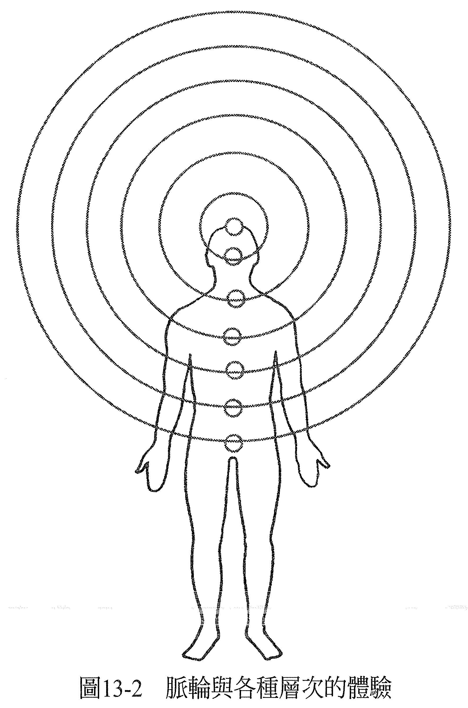
身为案主的你，当身体结构重新排列，产生平衡，能量有了新的形态，你可能会经验到的知觉是好像有东西在你身上移动，直到你感受到这次疗愈全部的效用为止。如果两个礼拜后还有任何症状的迹象持续，那你可以就接受到目前为止的疗愈程度，并做好准备去纾解剩下的症状。然后，当疗愈完成，你就可以继续好好生活，埋首其他重要的事，例如活出你的梦想，用自己的方式找到幸福。你好了，不用再做任何处理了。
好了就是好了。
————在这个世界上，一切都可以疗愈！————
第 14 章 接受你痊愈了（疗愈与蜕变）
每一种类型的疾病，都和某种存在之道（the way of being）有关。与心脏疾病有关的是一种类型，与癌症有关的是另外一种，与近视有关的又是另一种，以此类推。这个人的存在之道有了紧张、冲突，压力来到身体层面，就以症状的方式显现。
如果要释放一个症状，这人也必须释放掉与症状有关的存在之道——就是它创造出这个症状的。从意识中释放掉这个压力，会让他们产生不同的认知，以及有不同的存在之道。泡泡的本质改变了，看世界的认知过滤器也就改变了。换句话说，因为是我们的认知创造出实相，所以会从一个泡泡转变或移动到另一个泡泡，从一个实相来到另一个实相，从一个模型来到另一个模型。
因此可以这么说，疗愈的过程也代表了蜕变的过程。而从我的经验来看，重大疾病的复原一定伴随着这个人存在之道的改变。他们若不改变，就会继续显化症状直到死亡。改变了的人能够用新的眼光看待生命中的事物，注意到事情已经不同以往。他们可以因为有了不同的体验而确立不同的信念。或者，他们也能够先确立不同的信念，然后因为这样而得到不同的体验。
无论如何，重要的是释放掉因旧的遭遇而来的旧认知——如果这些旧认知就是造成你和周遭环境之间的互动方式很有压力的话。
一个可以改写、调整认知的方式，就是去承认时间可能会扭曲内在的程式和认知，然后选择不要用过去的负面经验来扭曲对当下及未来的正面观点。
例如，你的人体生物电脑里可能有一个程式是：「我一见到吉儿就头痛！」然后，一想到吉儿，你就预期会头痛，如此你就极有可能肯定这个事实，这个你信以恒真的程式，于是它对你而言就确实是真的了。不幸的是，这个程式每次都导致头痛，所以虽然它很迅速有效，结果却是不愉快的。
要承认事实，并释放这个程式，你可以说：它过去是真的。那么，这个程式就变成是：「以前我一见到吉儿就会头痛——不过下一次不会了。也许吉儿已经发现了她的错误，或是开悟了，或是蜕变了（对方一定会有改变）。下一次，我再看看会怎么样，到时候真实的情况是什么。」
然后，你亲身的经验可能会显示在事实上，真相成了另一回事。「哇塞！吉儿真的变了！而且其实有她在身边还蛮开心的！我确定以后有吉儿在的时候，我不再头痛了。」从那一刻开始，这些话语就创造出新的信念，新的认知被允许了，新信念也创造出新的实相。
「也就是蜕变的过程，那么你如何向自己形容自己，就特假如你有兴趣体验能量疗愈别的重要。因为你用什么语言来形容你的经验，就会创造出什么样的实相，而你的重点是要创造出让你感觉比以前好的不同实相。
所以，要注意你用哪些字句来形容自己，这很重要。假如你在形容某个你不认为特别成功的特质（诸如「我很害羞」、「我害怕成功」或「我天生就爱生气」等），那么在说的时候，就把它留给过去（「我『以前』很害羞」、「我『曾经』害怕成功」或「我『以前』很爱生气，因为我没能真正在做我自己一等），腾出空间给当下还有未来的新认知。
如此一来，你会比较容易不去认同，也比较容易放掉那些和有待纾解的症状相关的旧想法及压力。
你用什么语言来形容有待纾解的症状也是一样。想想「时间」这个元素吧！用你此刻感受到的症状来描述给自己听。若你说：「它整天都在痛。」那你可能就没有留意到——事实上，它现在已经没那么痛了。若你现在没有感觉到病症，但你却说：「这个症状来来去去」，那你就是在预期它会回来。一个比较有效的方法是去描述你这一刻所经验到的，认同当下的真实，用正面的态度看待正面的未来（「现在比以前好了」、「其实真的看起来愈来愈好了」等）。
当然，正面的心态有助于你享受人生最棒的品质。然而，它对于疗愈而言更是必要。
凡是你观想的，你都在增加它发生的或然率。被你注入意识里的意象或画面，发生的可能性会更高。如果你继续在意识中注入你正受苦的画面，你就有可能继续受苦。你对这个画面有什么样的情绪甚至不重要，重要的是画面本身。因此，假如你想着的是你不想要的画面，你依然有可能用这个画面充满你的意识，而继续创造出你不想要的。
所以说，让意识里的画面就是你正在努力达成的最终正面结果，是对你目标的一种提醒，这很重要。当你在做能量疗愈的时候，最好的情况应该是你很期待痊愈。至少也绝对不可以不相信或抗拒，否则会阻断疗愈的过程。
你不需要相信能量治疗师用的方法或体系，但你一定要敞开心胸，看到它有可能在对你发挥效用。如果你确实相信能量疗愈，那在做疗愈的时候可以提醒自己：你现在正在痊愈中。疗愈发生了以后，你可以看看效果到目前为止是局部还是全面。有的时候，疗愈的全面效用会马上就很显著，但通常会在疗愈的动作完成后，花上几天到几周的时间持续发挥正面的效果。
当疗愈很全面、不再有任何症状，你就知道你已经好了，继续好好过生活吧！倘若没有感觉到疗愈的效果很全面，就继续提醒自己疗愈已经发生，疗效已经上路，这点很重要。别持续用旧的泡泡看自己，要用新的、你正在前往的那个泡泡看自己。看见未来的你好了。
在换泡泡，或从任一个实相移动到其他个的时候，有三步骤：
1 决定在新的实相里，什么是真实的。
比方说，你可以决定：「在新的实相里，做完疗愈之后就不再痛了。」或：「肿瘤就会消失了。」
2 增强「它现在正在发生」的感知。
虽然你确实正朝着未来的某个目标前进，认为它在未来某一刻会成功，但增强它的这个过程却必须发生在当下。很重要的是，去检视你对于此刻的情形、在你经验到它的这一刻有什么样的认知，例如：「现在没以前那么痛了。一定是疗愈发生了。」或：「现在我看字比以前清楚了。」或：「也许现在肿瘤确实小一点了。不管怎样，我的意识现在感觉更清明了，所以我知道有好事在发生。」
正向思考并不是自我欺骗。虽然会觉得症状时好时坏，但重要的是，要看到现在的坏比以前还好，所以就算是你现在最坏的日子，也比以前最好的日子感觉还要好。换言之，纵使在那些你感觉症状出现的日子里，你也可能留意到它们没有以前那么糟了（如果是真的话），那你就能怀抱正面的认知。
重点是给自己理由对这个过程有信心，同时承认身体层面上的真实。毕竟，是由身体层面上测量到的数据来显示蜕变意识的效果。每当身体层面的情况有了改善，就应该加以承认并认同，看作是疗愈此刻正在发生的证据。
如果身体检测后发现状况在持续恶化，就必须知道还有地方不顺，你可以采取一些步骤去修正，继续疗愈的过程。这个必要的修正也可以视为疗愈的一部分，而它确实也是。它会让你朝最后痊愈的结果更迈进一步。
3 下定决心并知道：它「现在」是真的存在。
你继续支持疗愈的过程，直到你感觉自己没有了症状为止。然后，你必须考虑一个可能性：你或许永远不会再有这个症状了。疼痛消失以后，可能就是永远消失了。你看清这一点，接受这是你新的正常状态。疗愈完成后，你一定要认为自己好了，就是我们所谓的「你接受你已经好了」。你认同你经验到的意识状态，从这个意识状态看出去的世界，对你而言是正常且普通的一—就算它对你而言是一种「新的」正常的存在形态。
假如是医学检验的证据告诉你生病了，那就期待下次的检查会告诉你症状已经消失。反正，好了就是好了，每一个层面都好了。如果检验显示有进步，但还不是全面的，那你也知道你正朝正面的方向前进，还有一点路要走。如果你一直都在自己身上下功夫，那么就继续，接受你到目前为止所做到的进步。如果你是请人来疗愈你，那你也知道既然已有局部的疗愈，下一次会让你更一进步，或者下一次就是最后一次。
当身体层面的反应显示出你努力进行的疗愈是有效的，就接受它、信任它，当你的健康已经完好无虞，就找其他的事情给你的意识做，不要再让它去修正问题了。发挥创意，设立目标，看着它们实现，用你学过的方法去创造出一个让你快乐满足的人生。
你或许会考虑和别人分享你成功的故事，很多能量治疗师及教导能量疗愈的老师，都是因为必须疗愈自己而开始踏上这条道路。因此，他们在分享自身故事的时候，那都是他们的亲身经历。
这个方法对我有用，所以说不定它也对你有用。
让每个人都知道吧！
————在这个世界上，一切都可以疗愈！————
第 15 章 反馈
每个症状都一定有其内在的成因——因为案主一直在意识中做某件事，才导致症状出现。当案主好了，重返健全的感觉以后，便又会再次活在清明的意识状态里。
这时候，案主可能会感觉有些什么不同，但又不完全清楚是哪里不同。压力和紧张已经被释放，也用新的方式看事情了，不过可能要等到案主检视了之前用紧张态度来看待的问题后，他才会发现自己有了新的看法。
只要案主因为习惯或执著于旧想法，而选择又用旧的方法做决定、看事情，他们还是会重新创造出这些症状。一旦驻留在全新澄净的意识里，就能继续用新方法看事情，而保持一直没有症状。
那么，很有帮助的一点是，要让案主知道是他的哪部分意识得到了清理，具体而言是哪些和症状有关的旧思考模式需要疗愈。如此一来，他们就能够选择做点不一样的，而且知道这是为了自己的健康和幸福着想。
这有点像把车子老是为了长年以来的同一个问题，一直送修一样，已经修了一遍又一遍。如果师傅告诉你问题为什么老是存在，也许是因为开车时的某个习惯，那你就知道，以后若你维持相同的习惯，就会导致同样的问题一再出现，换个做法则表示这个问题会消失。
如此说来，在做能量疗愈的时候，反馈是一项重要元件，也就是要告诉案主：他的意识发生了什么事，和身体里发生的事有什么关连，或是某些信念与他们人生里的状况有着什么样的关系。
给反馈的时间点是在做完疗愈之后。身为能量治疗师的你，告诉案主你看到什么、你做了什么，它对你而言代表什么，你的意念是想要帮助案主转向新泡泡，他们在这个新泡泡里感到很干净、痊愈而且清楚。你说出你看到并移除了什么样的思想形式，以及它们对你而言代表什么。就算对你而言没有意义，对案主而言也应该会有。
在疗愈的过程中看见的东西，必然至少会对两个参与者其一产生意义，不然这些画面就不会自己出现了。不过，有时候要到一段时间后才会领悟这个意义。当然你也不要依照案主是否听得进你的反馈，而改变你看到的画面，不管怎么说，看见什么就是什么。唯一可以变动的是诠释。假如你不清楚该如何诠释，那么只描述看见什么画面也就够了。
若你处理的是脉轮，你可以说你在脉轮里看到了什么，按照「色彩的语言」（见本书第六部的附录 3）来诠释你所看见的画面。例如，你也许会说：「你的红色脉轮有些蓝色的地方。所以我知道你以前很渴望安全感。我把蓝色移走了，把它变回红色了。现在你应该会觉得更加踏实，你可以预期你对安全感的需求会变得很满足，例如你和金钱的关系。」
案主听了可能这么回你：「自从我母亲过世之后，那些事确实都成了问题。现在我知道它们之间的关连了。我也不再觉得那么想念她了，我只是深爱她曾在我人生中为我做过的一切，我觉得需要重新好好过日子了。总之，我觉得自己依然被爱包围，这种感觉很棒。」所以，你要清楚你的反馈不是要说他哪里依然是个问题，你要说的是，在做疗愈之前曾经存在、但现在已经纾解的问题，以及疗愈完成后他可以期待的正面结果。
再举一个例子。你也许会说：「我在你的太阳神经丛附近看到一种像壳一样的东西，我释放掉它了。它让我感觉你以前是把自己关起来的，但现在那里应该会觉得比较舒服。一案主可能会回答：「对，我也这么觉得。以前我的生活环境给我这种感觉，不过现在我好像觉得比较开关了。谢谢你。」
假若你说：「你都没有让自己得到滋养。也许是从和你母亲的关系开始的。」那案主就可能会带着自己依然和母亲之间有些问题的印象离去，而且会觉得是因为母亲做错了什么。他们也可能继续认为，他们有不让自己得到滋养的问题，会找理由来继续肯定这个问题的存在。
然而如果你补充：「现在，你会觉得你比较容易去滋养内在存有了，也会觉得比较自然，此外，你可以期待和母亲的关系会更融洽，你会更自在地让她的爱进来。」案主就可以在新的实相里带着这种正面的期待感离去，觉得已经痊愈。
也不是每次一定都要给反馈，因为我们一直都连结着自己的内在之声，内心深处，我们什么都知道。但纵然如此，从外在再听到一次可以增强这个讯息。有的时候，案主已经领悟了这个讯息，执著于这个症状的只有过去的信念，例如不知该如何相信症状可以纾解。那么，能量疗愈就是案主用来释放症状的「借口」，他们其实已经得到讯息了，也已经用在人生中需要改变的事物上，让自己变得更快乐。
当你给案主回应，你说的并不是他们还不知道的事。他们内心深处其实会和你的话产生共鸣。他们会知道这次的交流是正确的。如果不是，他们应该就会告诉你。
你在给反馈的时候，案主或许会用下列两种方式其中的一种来回答你。其一是：「我有同感。」意思是，他们基于对自己的认识，认同你的反馈是正确的。其二是：「我没有这种」感觉。不过谢谢你告诉我。一意思是至少现在，他们还不认同你的反馈，但或许以后会认同也不一定。
当然，还有另一种可能是你的反馈并不符合案主的情况，是你做了错误的诠释。当你看到一些东西，虽然画面可能非常明确，但你的解析不见得。若是这样，案主如果能直接告诉面你：他和你的回应对不上，对你及案主都会有帮助。也许，你们之后会一起针对你看到的画面，找出更适当的诠释。
当然，为了让效果更好，要尽量把你的反馈说清楚。毕竟你要做一件事，就要尽量做得好。假如案主告诉你：「我没有这种感觉」，你就得检视你的观感有什么样的特性，想一想你是否不小心用了你自己的泡泡，而非案主的泡泡来诠释你看到的画面。如果是的话，你就要适当地调整你的反馈还有自己的认知。
身为能量治疗师的角色时，你必须检视和案主的沟通，产生什么样预期的效果，最后给案主的印象是：他已经得到疗愈了吗？还是以前没有感觉到的问题会继续存在？告诉一个人：「小心那个戴红帽子的女人。她不是朋友。」或：「我看到和车子有关的意外。」只会在案主的意识里播下恐惧、怀疑和猜忌的种子，还会让他觉得他得继续依赖能量治疗师。
若你能给他们信赖自己的感觉，信任自己不需要靠你进一步的协助，就能自己创造出正面的人生，对案主会比较好。因此，这应该是你在给与反馈时的方向，并记得，增强「案主已经痊愈」的认知（包括你自己的还有案主的）。
认知创造实相。
————在这个世界上，一切都可以疗愈！————
第 16 章 疗愈别人——准备工作
既然认知创造实相，那你就必须在心中创造出案主已经痊愈的认知。有几种方法可以做到这一点。
要创造案主已经痊愈的认知方法其一，是运用「身心健康」或「健全」的模型。本书稍前讨论过的工具有三：脉轮、白光、思想形式。然而，不管你用哪一种，要记得用的时候心怀正向的期待感，效果会最好。
案主在他们的认知里，创造出你是疗愈者的感觉。当你身为疗愈者，就要扮演好这个角色，这很重要，即便只有在每一次疗愈需要的短短期间内。完成后，你可以允许自己赞叹你所创造出来的奇迹效果，有朝一日，你会把它看作你的新普通实相。
在进行能量疗愈之前，在能量治疗师与案主之间，若不是案主来找你，请求你帮他疗愈某处，就是你主动想帮忙，然后案主以他想请你帮他疗愈某处作为回应。
不管案主是直接还是默默地同意参与一次疗愈，你都要和他的意愿一致。这个时候，案主为阳，而你是他的阴。建立方向者是所谓的「阳」，同意支持这个方向并跟随的，是所谓的「阴」。
那之后，在进行疗愈的时候，身为能量治疗师的你就成为了阳，因为是你在建立程序；而同意敞开心胸、接受治疗的案主则为阴，如此好让他们表明的需求能够获得满足。
身为能量治疗师的你，不会问案主这次疗愈该如何进行，也不会按照案主的指令来做。不然，就会变成把这个过程交给案主来主导了。疗愈必须是发生在能量治疗师的认知里，所以身为能量治疗师的你得在疗愈的过程中指引这次的行动。当然，这可以在考虑案主敏感度的情况下进行，但仍然是身为疗愈者的你，在案主同意这个认知的情况下，共同创造这次的疗愈。假如案主对身为能量治疗师的你的技术没有信心，或不认同这些方法，那他就应该停止进行，去找其他的治疗方法，甚或另外的能量治疗师。
总会有其他的办法。
能量治疗师的功能和认知，在能量疗愈中可以分为两类：典型能量疗愈和急救型能量疗愈。典型能量疗愈会要创造出最佳的情境来做疗愈，不过要了解，这些情境并非不可或缺。即便没有这些，你还是可以发挥能量治疗师的作用，像在需要急救的时刻，你还是得以发挥你的能力。就算在急救的情况下，你也必定要维持「疗愈正在发生」的认知。
虽然说若有柔和的光线及音乐有助促成最佳的疗愈，但你也知道，万一有需要的话，你可以在时代广场的叭叭车声里，滚石乐团在你旁边演唱「俏黑妞」（Brown Sugar）的情况下，进行能量疗愈。身为治疗师的你，一定要一直维持「疗愈正在发生，而且正在发挥效用」的认知。
不管用的是哪一种能量疗愈，是典型的还是急救的，做的是脉轮、白光还是思想形式，你都一定要用相同的方法把自己准备好，也就是要让自己处于可以感受到能量、能让疗愈发生的意识状态。这在本书第五部「基本能量练习感觉能量并引导能量」中会详述。你要读完这部分，把练习做完，对于能量疗愈准备工作的认识才算完全。
做完这些练习后，你会有更多体会，就可以按照后面几章的程序来进行了，所以请现在花一些时间去做这些练习。
当你要着手做疗愈的时候，最后一步一定要提醒自己：你还没有准备好要做的疗愈，是绝对不会找上你的。
————在这个世界上，一切都可以疗愈！————
第 17 章 用白光疗愈
在这一章，身为能量治疗师的你，会用白光来做找回健全或健康的模型，创造出疗愈已经发生的感知。当你想象案主盈满白光，这会引发案主已经痊愈的感知。
之所以用白光来做治疗，是因为它容易让我们正面联想到纯洁、灵性。此外，白光代表健全，也是因为它包含了光谱中的全部色彩，而全部（完整）就是健康。
想象一支萤光灯管，当能量流通时，它会发光。所以说，白光也可以代表能量正自由自在地流动，这很符合我们对疗愈的定义：纾解卡住的地方，以回归健康的感觉。
若说白光代表能量自由自在地流动，那阴影就代表流动不顺的能量了。如果你在让案主充满白光的时候看到阴影，就知道它仅仅代表紧张状态，要给它照射更多的白光。当阴影遇上光，就只会剩下光。紧张要不是存在于意识层面，就是身体里，或是两者都有。化解阴影表示紧张也化解了。
当然，倘若你感觉到案主的身体里有紧绷（例如肩膀），或是你知道他的身体里有紧绷，那你也会知道当你向内看的时候，你会看到如阴影般存在的紧张。若你没有看到，你就必须调整你的感知，直到它和你所知的身体层面的事实一致。尔后开始的就是：阴影会被化解，紧张得到了纾解，疗愈便能显现。
在典型的白光疗愈里，案主会舒服地坐着，双脚平放在地，双手张开，放松地置于大腿上，闭着眼睛。当然，案主是不戴眼镜或带有任何人工装备的。之后，看见案主敞开心胸准备接受疗愈以后，你就可以展开「疗愈的起始姿势」（见图 17-1），详述见于本书第五部。
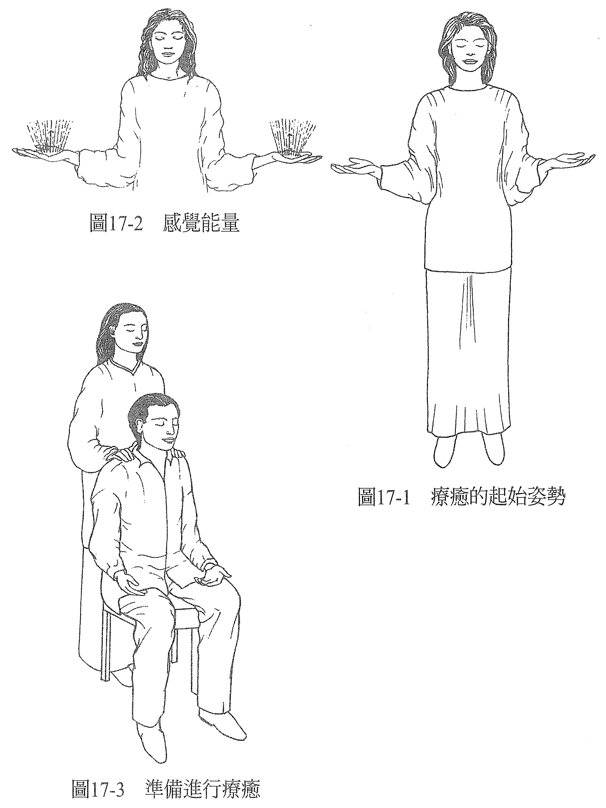
感觉到你双手里的能量（见图 17-2）以后，你就知道你现在的意识状态很适合感受能量、让疗愈发生。接着你可以告诉自己，你感受到双手散发着白光。
温柔地把双手放在案主的肩膀上（见图 17-3）。
虽然这不是疗愈过程非做不可的动作，但接触案主确实可以给他一种放心的感觉，也会开启你与他之间某种程度的直接交流。触觉和绿色脉轮（心轮）有关，等于是从体内来连结一个人。肩膀和蓝色脉轮有关，与案主是否有意愿敞开和接受有关。所以，当你把双手放在案主的肩膀上，你可以直接感受到案主对疗愈敞开的程度。
这里要强调一下，在这类的疗愈当中，接触是很轻的、没有压力，不需要去操控对方的身体。
等你的双手焕发着白光以后，就想象你用这道白光透过肩膀充满案主：往上充满头部，再往下穿过身体来到脚趾，也盈满身体、手臂、来到肌肤。这些都是把你的手放在案主的肩膀上来做就可以了（见图 17-4 ~ 17-5）。
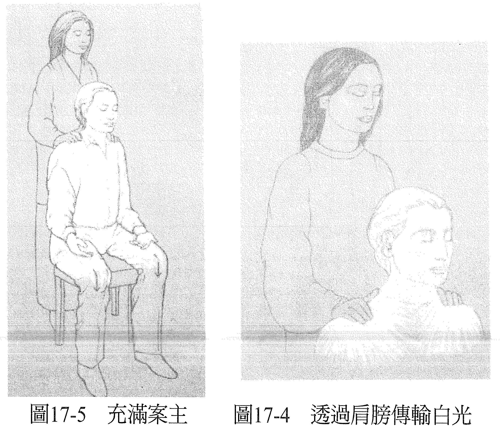
若你感觉很难进入身体，（因此）也很难进入到案主的意识，那就在心里默默地对案主说话，以心灵对心灵的方式，就像是在想象中对话，例如：「我是为了疗愈你而在这里的，但我很难进入你，是否可以请你再敞开心房一些，让我用我知道的方式协助你呢？」通常这样说完以后，交流就会变得轻松点。如果还是没有，就用嘴巴直接说出来进行沟通。假如仍然有抗拒，就承认它的存在，让案主知道他需要去找其他的能量治疗师，或是换种方式，或是另外再找时间。
用任何一种你选择的方式，想象自己用白光盈满案主。你可以想象有一种白色的物质流过双手，充满案主。或是想象案主全身上下有数百万根的小萤光灯管，当你双手的能量触碰到身体某个部位里的灯管，这个部位就发亮了。
假如把手放在案主的肩膀上时，你感觉到他的肌肉紧绷，你就知道当你看的时候，你会看到阴影。阴影就是紧张。你不需要按摩案主的肩膀，只要从双手散发白光，看著白光化解阴影，一如加热灯管融化冰块一样。如此，你会感觉到案主的肩膀在你的掌心里放松下来，而且是自然的，不是因为你施以压力。
当案主在充满白光的时候，如果你看到了阴影，就去想象你用光化解了它，并记得这些阴影是在哪里感知到的。做完疗愈以后，你可以用反馈的方式（见上一章）告诉案主这个讯息，他就会知道，在哪里感知到的紧张已经纾解了。
当你看到案主全身上下都充满并散发着白光，你就可以创造出「疗愈已经发生」的感知。这时候，疗愈已经完成了，你要告诉案主你做完了，「等你觉得差不多了，就可以张开眼睛。」然后等待案主的反应。
你已经创造出「疗愈已经发生」的感知，现在你需要知道案主认同这个感知到什么程度。你可以透过询问案主来找出答案：「感觉如何？有什么不一样吗？」他要回答你这个问题，就得检视当下的感受、和以前的相比较。你要让他把到目前为止的正面感知第一时间说出来。
如果案主不是这么回答你，就把他的注意力引导到当下这一刻的感受，鼓励他说出到目前为止他所察觉到的任何正面疗效，事实上那就是真实。
那之后，如果还有某种程度的症状存在，案主可以说出来，你可以再请他像之前那样，敞开心胸，迎接疗愈完成，把白光传送到他的身体里还没有完全觉得顺的地方。
将白光充满这个地方，化解这里觉得不舒服的阴影。完成后，你可以再请案主张开眼睛，再问感觉如何？有什么不一样？
可以用这种方式做到症状完全解除，或是已经花了充分的时间为止，确定这次能量疗愈做到这里，已经尽量发挥了最大的效果。
也可以试试其他的技巧，例如用脉轮或思想形式来处理，是否有助完全解除症状。如果单一技巧遇到瓶颈，结合上述技巧通常可以成功。
要深信正面的效果会持续一段时间，而且事实上，全面性的效果还可能旋即出现。就算抗拒全面且即时地解除症状，但我们认为疗愈一定会发生，所以说出这个抗拒并承认它，亦有助于朝着全面的疗效更进一步。
当你用白光来做急救，案主的姿势就无所谓了，最迫切紧急的是让案主充满白光，减少或消除必须处理的症状。可能的话，可以在触碰案主的情况下进行，因为触觉确实能提供对方某种程度的安心感，这份安心感在紧急情况下是需要的、也是被渴望的，它也提供了一种管道取得自光所提供的健康感。
假如你无法直接碰触案主，你还是可以透过想象让案主盈满白光，在你心中创造出「案主正感觉愈来愈好」的观感；之前觉得是问题的，现在要不是已经完全解决，就是正稳稳朝这个方向前进，而且一直在变好当中。当你能维持这个认知，这个「已经痊愈」的思想形式就会进入乙太，帮助共同创造所谓的物质外在实相，那它也就可以实际在身体层面上帮助疗愈。认知创造实相。
————保持这个认知：在这个世界上，一切都可以疗愈！————
第 18 章 用脉轮和（或）思想形式来疗愈
在典型疗愈里，能量治疗师可以用脉轮的颜色来创造出一个「健康」的模型。若你看见脉轮的颜色和它原本该有的不一样，你可以移除这个不同的颜色，用它自然该有的颜色取代。当每种颜色各归其所（红色脉轮是红的，橙色脉轮是橙的，以此类推），你就创造出案主现在觉得健全的感知了（如果你还尚未读过附录 1 到 4 介绍的脉轮详细资讯，现在不妨翻阅一下）。
用脉轮的颜色当成健康模型时，要不要结合思想形式（thought forms）都无妨。不使用思想形式来做也是可以的，因为脉轮已经呈现出发生在案主意识里的一切，所以其他的都非属必要。
喜欢用思想形式与脉轮一起做疗愈的能量治疗师，他是认为如此一来可以更详细知道案主的意识发生什么事，便能更好地回应对方所描述的症状。
结合思想形式与脉轮时，仍然要从每个脉轮是否有它该有的颜色来判断它是否健康；只要有思想形式出现，都要移除——不管你认为它是好是坏，因为如果把它留在那里，最终的样貌都会和我们用的健康模型有所不同。
有时思想形式会自己出现，它想要我们在疗愈之后告诉案主一些事，作为疗愈的一部分（例如：「刚才你的靛蓝脉轮里有天使陪着你」，或：「一个你深爱的人刚才在绿色脉轮这里陪你」）。当你用的是以上叙述式的典型脉轮疗愈，如果思想形式是自己出现，每出现一个、你就处理一个，然后再前进到下一个脉轮。
若无法执行典型的疗愈形式，例如遇到情况危急或是需要用能量疗愈做急救处理，那你在绝大多数的情况下，都可以用白光来进行，如前一章所述；当然也可以用思想形式，因为这样做可以让症状迅速、舒服地缓解。需要马上舒缓疼痛或头痛的时候，思想形式特别有效，例如用压力阀；做脉轮的话，则是可以让你详细得知案主的意识里特定部分的压力情况，不过所需要的时间会略长些。
虽然处理急救通常会用思想形式来做，但偶尔也会从脉轮着手。比方说，如果案主离开了身体（像是癫痫发作或昏倒的情况），那你可以建构红色脉轮，把根传送到大地里，汲取养分往上带到红色脉轮，如此可以迅速地把他带回身体。因为红色脉轮与案主及身体的关系有关，所以这通常可以让他迅速返回。
在做典型脉轮疗愈时，开始的方法和做典型白光疗愈一样，确定案主坐着、双脚平放在地，双手张开、放松地置于大腿上、掌心朝上，眼睛闭着，心中怀抱敞开和接受的态度。
从疗愈的起始姿势做起，让双手去感觉到能量，觉得疗愈可以发生了。接着告诉自己，你感觉到的能量是白光，正从你的双手散发出去。
把手温柔地放在案主的肩膀上，轻触即可，想象你正迅速地让案主充满白光。做白光疗愈的时候，你的计划是当你看到案主全身都盈满白光，你就看到疗愈完成了，这大约会花五到十五分钟的时间，视你看到什么、做了什么而定。到这个时候，意义就不一样了，你是决定用从脉轮做疗愈时得到的细节，做更进一步的疗愈。
没有哪一种形式的能量疗愈比较有效，每种都可以用来疗愈所有的症状。这里，让案主充满白光，会让你觉得你正走入案主意识最深层的部分；你在疗愈的过程中看到的，会是从这个最深层的部分所看到的。充满白光或许只需要一、两分钟，你也许会有一些画面，让你知道你已经来到这个最深层——案主的意识中心。也许案主的中心有一根管子，或是那里有案主的影像。当案主正充满著白光，或许就有一些东西正在得到疗愈，例如盔甲卸下了，或是壳打开了（见图 18-1）。
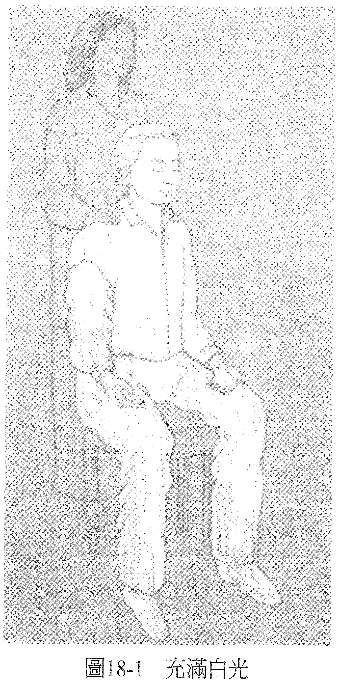
等案主充满白光，就依次触碰他身上各脉轮所在的部位，进行的时候不用说话，只要看进那里有些什么，并做该做的事来创造出疗愈已经发生的感知。要再次强调，不管你是否有碰触案主，他都可以获得疗愈，只不过这里拿出来说明的是透过身体接触来做疗愈，它会增强交流，让案主安心。
很多人会觉得红色脉轮很敏感、不想被碰触（它位于会阴，肛门和性器官之间），是以大多数的能量治疗师是从脊椎底端来做，比较方便。假如红色脉轮有严重的问题，可以考虑接触案主需要疗愈的地方，不然也可以从脊椎底端来做，或是把手放在椅子下需要治愈的区域正下方来做。手放上去以后，想象有一股能量流从你的双手或手指涌出，在你知道是红色脉轮之处创造出一个澄净的红色能量球。若你在那里看到其他的颜色，就记住是什么颜色，接着移除它，用正红色取代它，并移除所有的思想形式（见图 18-2）。
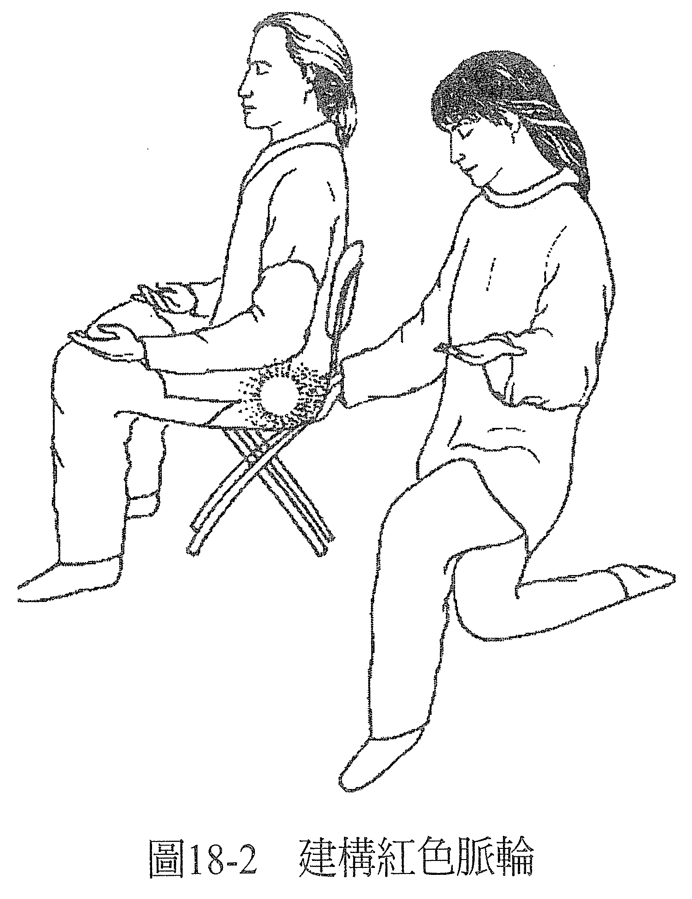
当红色脉轮处于澄净的状态了，就请红色脉轮沿着案主的双腿往下把根传送到脚掌（见图 18-3），看看会怎么样，如果有需要的话可以帮助它往下。然后你可以换姿势，把双手放在案主的双膝上，接着再放至脚掌上，并想象案主脚掌下的画面，若有需要就加以改变它。
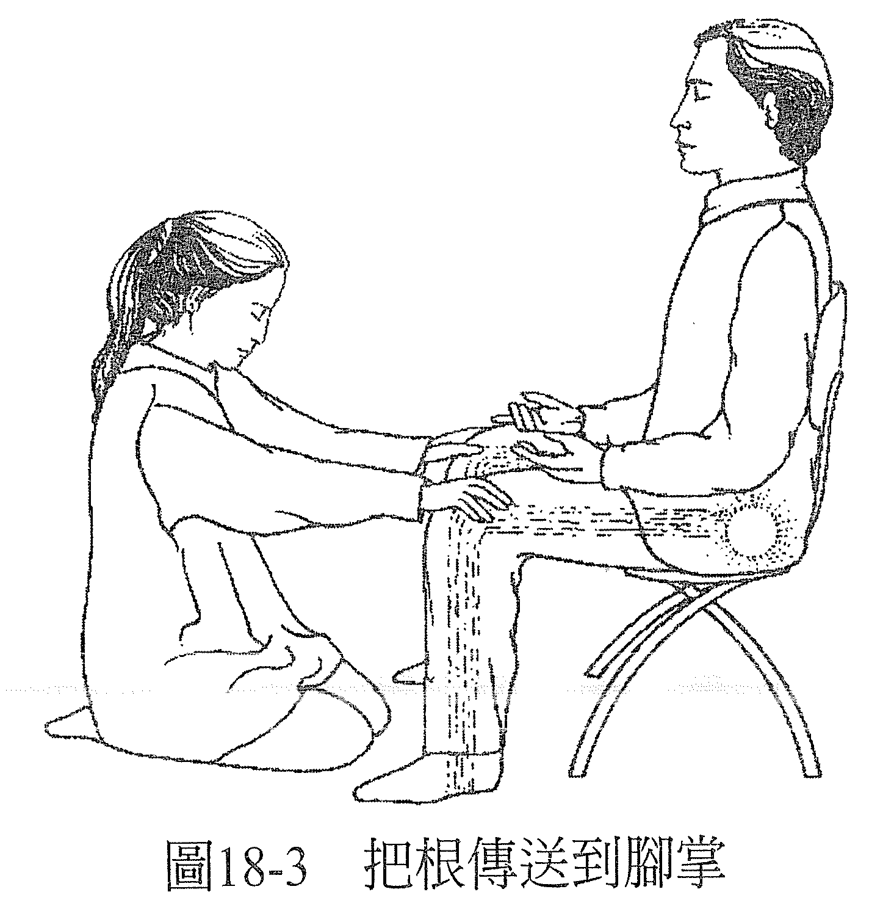
记住，案主脚掌下的画面要是可以让根部很开心的场景。如果不是，就把画面改变直到能够让根部开心为止。然后，请求根部蔓延开来，往下愈来愈深入滋养的源头（见图 18-4）。
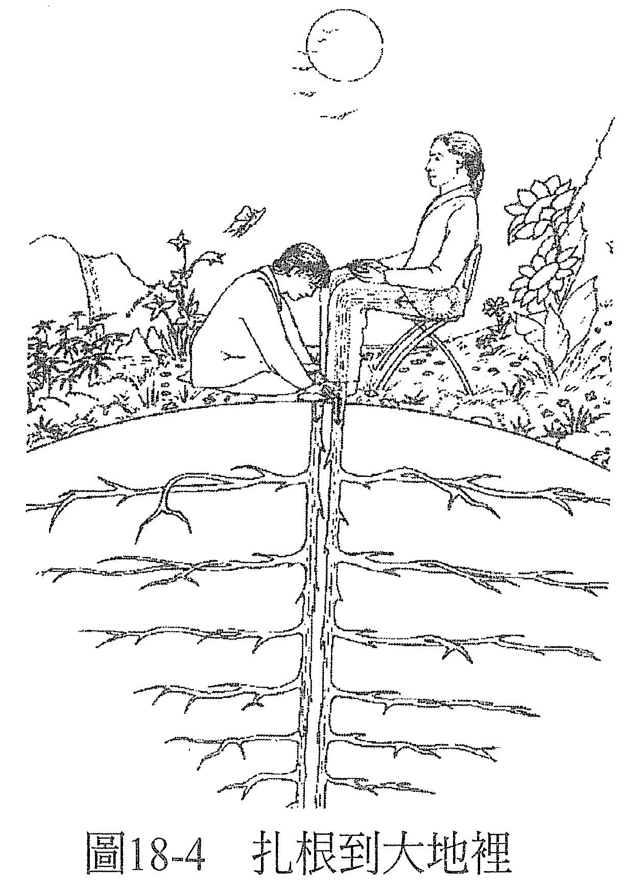
当根部触及地心的能量球，应该会马上有反应。养分应会立即开始沿着根部往上，进入案主的双脚还有红色脉轮。如果没有，你要帮忙它，用各种方法让养分能够往上（见图 18-5）。
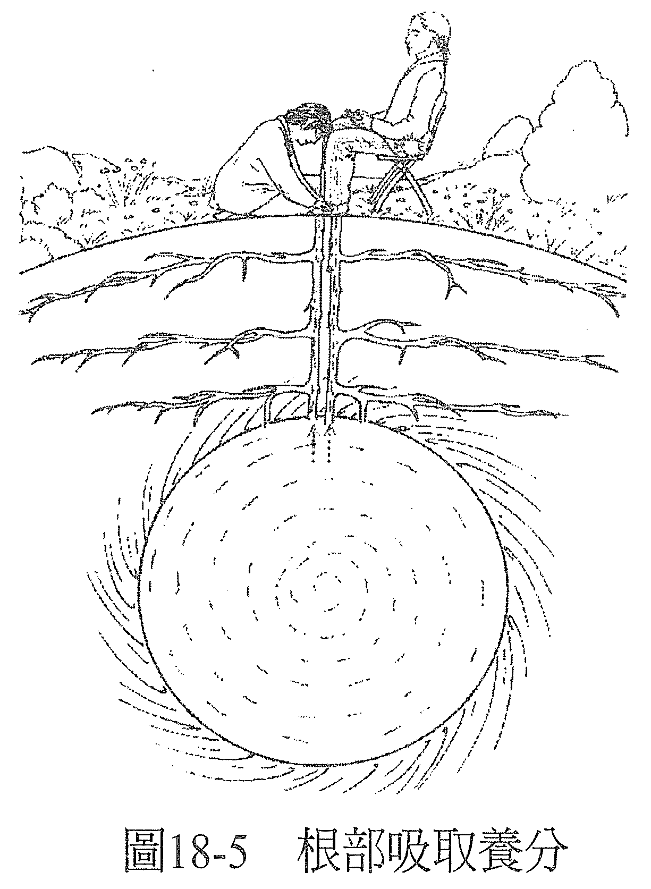
一种有用的做法是和案主保持内心的对话，问他问题，想象他回答，用这样的方法和根部说话。当能量往上流进根部，你可以再把手放在红色脉轮处，检查这里的情况，确认案主是否已经接收了这股能量。
接下来的几个脉轮，你可以从案主的左边或右边来做，一只手接触他的正面，一只手接触其背面。若中间隔着椅背也无妨，因为意识可以穿透一切。
在橙色脉轮的地方，想象有一股能量分别从两只手涌出，在你知道的橙色脉轮处，创造出它该有的颜色。若出现任何思想形式，就加以处理（见图 18-6）。
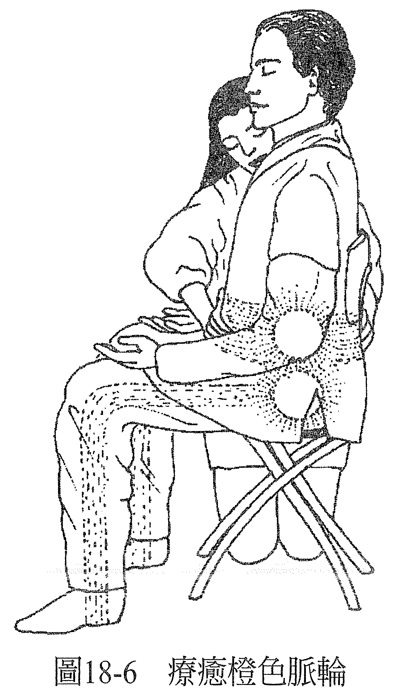
等橙色脉轮变成它该有的状态以后，用同样的步骤去做黄色脉轮。
在进行绿色脉轮之前，当你一只手还放在黄色脉轮上，就先把另一只手移到绿色脉轮上，以确保两个脉轮之间有一条畅通的管道能够穿越阻膜（第 8 章提过）。
想象每个脉轮都好比在一个房间里，然后请黄色脉轮房间的屋顶打开，请绿色脉轮的地板也打开。最好的情况是两个都打开了，类似相机的两个虹膜式光圈一般，而两个脉轮可以看到彼此，中间是清空的。假如案主还有心防，就可能会打不开，那你就必须用钥匙来开（见图 18-7）。
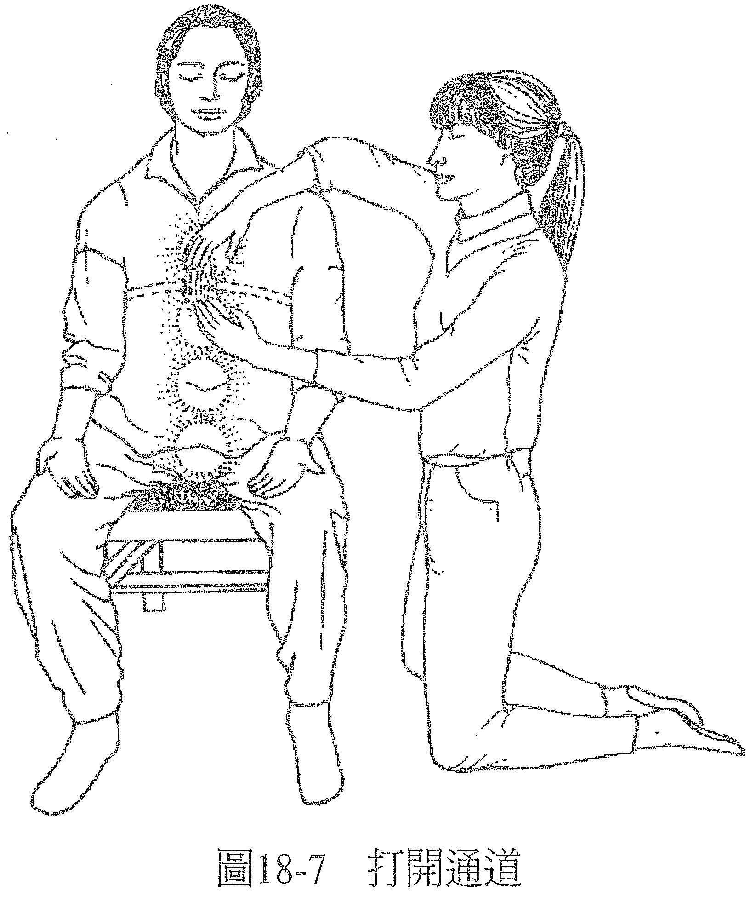
当有任何画面无法呈现出两个脉轮之间有开关的空间，那就一定要改变这个画面，直到能量能在两个脉轮之间顺畅流动为止。如果这里遭薄膜阻碍，那案主的意识要在黄色脉轮和绿色脉轮（和力量、控制、自由有关的认知，以及和爱、连结有关的认知）之间移动的时候，就会感觉到以愤怒、哀伤等形式存在的阻抗，或是其他被理解为阻抗、感觉不好的情绪。只要这个屏障尚未移除以前，案主每次要让注意力游走于这两处脉轮的时候，都会感觉到这层阻抗的薄膜。
任两个脉轮之间有屏障，都代表案主的意识在这两种观点之间有障碍。在此可能表示在自由与连结，或控制与接纳之间，心中有所冲突。疏通通道，会让案主的注意力在这两个脉轮间游走变得容易，解除存在于意识中的冲突。然后，案主就可以看到这两种认知其实是可以相容的。
两个脉轮之间有了通道之后，就用和做橙色、黄色脉轮同样的方式疗愈绿色脉轮：一手触摸前方，一手触摸后方，让能量流动于双手之间，在交会处形成一个能量球，发出它该有的颜色。有的能量治疗师喜欢想象自己的绿色脉轮里有一种翠绿的颜色，沿着双手往下传送到案主的绿色脉轮，并看看传送的时候会发生什么事。它会让能量治疗师与案主之间有着良好的连结感（见图 18-8）。
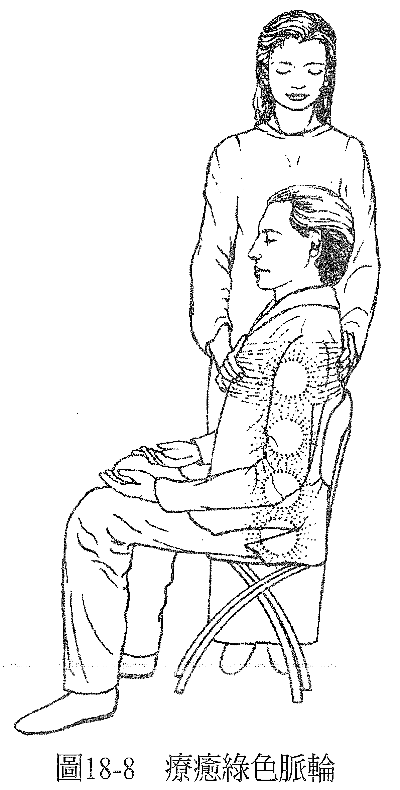
当做到蓝色脉轮的时候，你的手必须放在案主的双肩上，不要放在前、后方，这样他才不会有被勒住的感觉。一手放一边的肩膀上，想象各有一股能量从双手涌出，在你所知的蓝色脉轮处形成一种天空蓝的颜色。遇有任何锁链、重物或其他思想形式出现，都该加以移除（见图 18-9）。
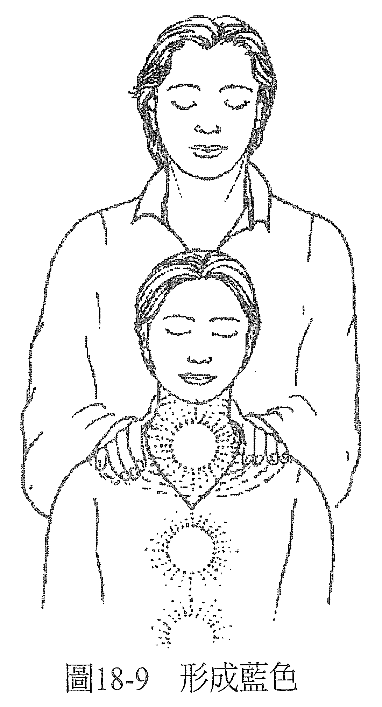
等蓝色脉轮变成它该有的样子以后，你就站到案主旁边，一只手放在案主的蓝色脉轮后面，另一只手触摸他和你同边的那只手的掌心，并请蓝色脉轮沿着他的双臂往下伸出枝干。然后，你应该会看到蓝色的能量流延伸到他手掌前方，来到一定的距离，大多数的能量治疗师会觉得八到十公尺的距离最佳（见图 18-10）。
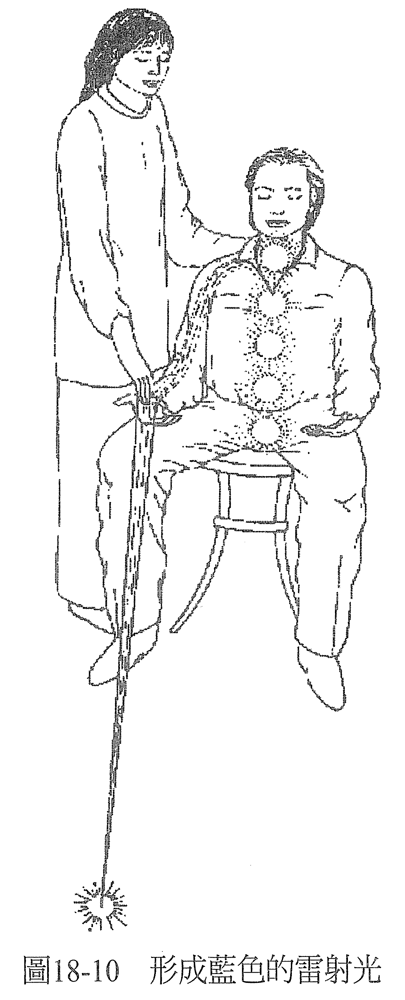
另一边也重复上述的过程去做，接着，这两股能量流会汇集于一点上。如果没有的话，就一定要「导引」它们直到汇集为止。有时候，这两股能量汇集的地方会出现一些景象，假如出现了，这个画面代表的是案主意识里的目标。如果在这里有看到任何东西，让案主知道，他可能会觉得很重要，而且这也是疗愈过程中的一部分。
当做到靛蓝脉轮的时候，你的手又可以放在案主的头的前方与后方了（见图 18-11）。在他额头的位置，用在做橙色、黄色、绿色脉轮同样的方式进行疗愈。
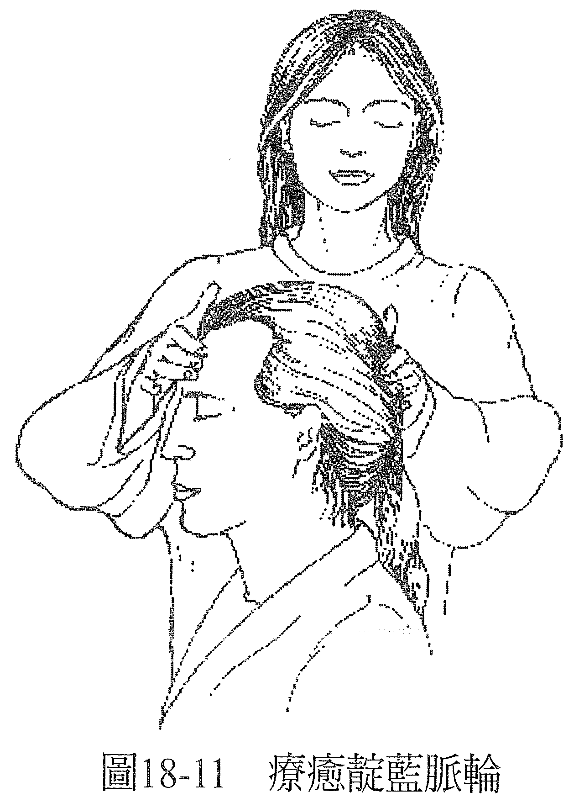
有些能量治疗师喜欢把靛蓝脉轮想象成一扇窗户。他们看入窗内、看看房间里的景致，房里的一切应该要是靛蓝、午夜蓝的。若你这么做了，你应该会看到案主坐在房间的中央，从窗户往外看。
你在房里看到的事物，有时候显示了案主与他房子、载具、身体之间的关系，以及他与灵性的关系。你要从这个角度去理解你在这里看见的景物。记住，靛蓝脉轮代表了案主对于自己身为驻于身体里的心灵，虽然穿戴着一个生物结构，但同时又是内在的心灵所怀抱的观感。
往外看的景色应该像是透过敞开的窗户，看到清澈的夜空。除此之外其他的景象都要加以改变，直到回复它该有的样子。透过窗户向内看到的景观，显示的是就案主与载具的关系而言，他的自我观感为何；往外所看到的景物则显示了案主是否有能力把他的灵性观点引导到外在，应用在周遭发生的事情上。
当做到紫色脉轮的时候，一只手放在案主的头顶，接触它，然后一股紫色的能量球就形成了。接下来，请紫色脉轮打开。理想的情况是它很容易就打开了，看起来像一朵莲花盛然绽放。如果没有的话，就需要移除类似遮罩或屏障的东西，重新请求它打开（见图 18-12）。
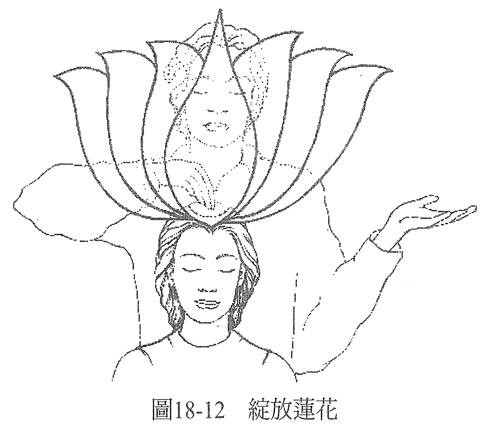
最后，在脉轮以它该有的样子展开之后，就请求白光从上方透过紫色脉轮充满案主，从脚到头，让每个脉轮（由红色到紫色）依序焕发出比以前更明亮、澄净的光芒。
等案主充满白光、全身白光满溢，每个脉轮都以该有的颜色焕发明亮、干净的光芒，也没有思想形式出现，这时候，你就创造出已经痊愈的感知了（见图 18-13）。
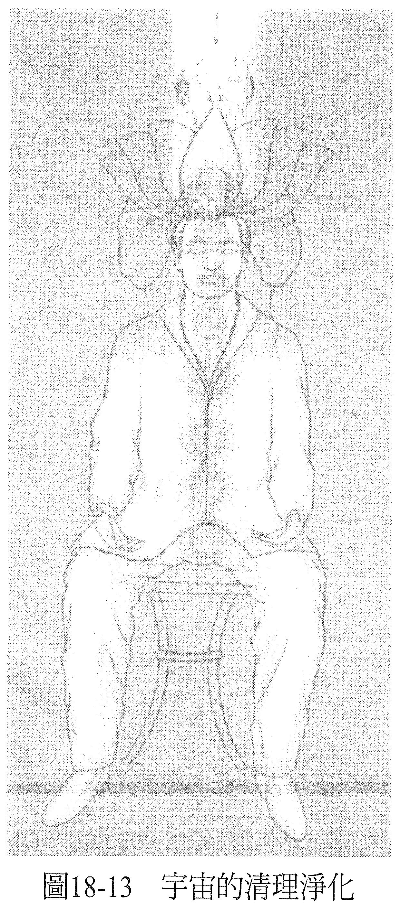
接着，告诉案主，等他觉得差不多了，就可以张开眼睛，问问他有没有觉得哪里不同了。要鼓励案主去留意在他所感知到的意识和身体里，有哪些不一样的地方，尽量鼓励他把截至目前为止任何的正面感知在第一时间说出来。
如果有症状还没有完全纾解，依然存在，那你可以选择马上处理这个症状，或是等案主也听完你给他的反馈后，再做处理。
你可以拥抱案主，欢迎他、他的新意识来到世界上。如此一来，案主将有机会与你心贴着心、表达他的感谢，或就只是感受这个接触；而你也有机会感激案主让你有机会成为让爱与能量流过的载具，为他进行疗愈。
给完回应，症状也纾解之后，再来一次拥抱，让身为能量治疗师的你和案主双方意识里的疗愈划下句点。案主好了以后，就没有回家作业了，没什么特别要做的了，也不需要进一步的治疗。他们可以好好过日子。你也可以放下任何想要保护案主或挂念的心，坚持你知道案主已经痊愈的这个认知，他不再需要你这边做出任何进一步的协助。
这么做，你和案主两人都会觉得自由。
————在这个世界上，一切都可以疗愈！————